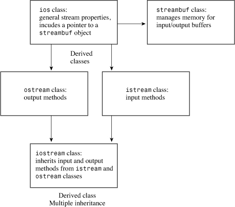

In this chapter you’ll learn about the following:
• The C++ view of input and output
• The iostream family of classes
• Redirection
• ostream class methods
• Formatting output
• istream class methods
• Stream states
• File I/O
• Using the ifstream class for input from files
• Using the ofstream class for output to files
• Using the fstream class file input and output
• Command-line processing
• Binary files
• Random file access
• Incore formatting
Discussing C++ input and output (I/O) poses a problem. On the one hand, practically every program uses input and output, and learning how to use them is one of the first tasks facing someone learning a computer language. On the other hand, C++ uses many of its more advanced language features to implement input and output, including classes, derived classes, function overloading, virtual functions, templates, and multiple inheritance. Thus, to really understand C++ I/O, you must know a lot of C++. To get you started, the early chapters of this book outline the basic ways for using the istream class object cin and the ostream class object cout for input and output, and, to a lesser degree, using ifstream and ofstream objects for file input and output. This chapter takes a longer look at C++’s input and output classes, showing how they are designed and explaining how to control the output format. (If you’ve skipped a few chapters just to learn advanced formatting, you can read the sections on formatting, noting the techniques and ignoring the explanations.)
The C++ facilities for file input and output are based on the same basic class definitions that cin and cout are based on, so this chapter uses the discussion of console I/O (keyboard and screen) as a springboard to investigating file I/O.
The ANSI/ISO C++ standards committee has worked to make C++ I/O more compatible with existing C I/O, and this has produced some changes from traditional C++ practices.
Most computer languages build input and output into the language itself. For example, if you look through the lists of keywords for languages such as BASIC and Pascal, you see that PRINT statements, writeln statements, and the like are part of the language vocabulary. But neither C nor C++ has built input and output into the language. If you look through the keywords for these languages, you find for and if but nothing relating to I/O. C originally left I/O to compiler implementers. One reason for this was to give implementers the freedom to design I/O functions that best fit the hardware requirements of the target computer. In practice, most implementers based I/O on a set of library functions originally developed for the Unix environment. ANSI C formalized recognition of this I/O package, called the Standard Input/Output package, by making it a mandatory component of the standard C library. C++ also recognizes this package, so if you’re familiar with the family of C functions declared in the stdio.h file, you can use them in C++ programs. (Newer implementations use the cstdio header file to support these functions.)
However, C++ relies on a C++ solution rather than a C solution to I/O, and that solution is a set of classes defined in the iostream (formerly iostream.h) and fstream (formerly fstream.h) header files. This class library is not part of the formal language definition (cin and istream are not keywords); after all, a computer language defines rules for how to do things, such as create classes, and doesn’t define what you should create by following those rules. But just as C implementations come with a standard library of functions, C++ comes with a standard library of classes. At first, that standard class library was an informal standard consisting solely of the classes defined in the iostream and fstream header files. The ANSI/ISO C++ committee decided to formalize this library as a standard class library and to add a few more standard classes, such as those discussed in Chapter 16, “The string Class and the Standard Template Library.” This chapter discusses standard C++ I/O. But first, let’s examine the conceptual framework for C++ I/O.
A C++ program views input or output as a stream of bytes. On input, a program extracts bytes from an input stream, and on output, a program inserts bytes into the output stream. For a text-oriented program, each byte can represent a character. More generally, the bytes can form a binary representation of character or numeric data. The bytes in an input stream can come from the keyboard, but they can also come from a storage device, such as a hard disk, or from another program. Similarly, the bytes in an output stream can flow to the display, to a printer, to a storage device, or to another program. A stream acts as an intermediary between the program and the stream’s source or destination. This approach enables a C++ program to treat input from a keyboard in the same manner it treats input from a file; the C++ program merely examines the stream of bytes without needing to know where the bytes come from. Similarly, by using streams, a C++ program can process output in a manner independent of where the bytes are going. Managing input, then, involves two stages:
• Associating a stream with an input to a program
• Connecting the stream to a file
In other words, an input stream needs two connections, one at each end. The file-end connection provides a source for the stream, and the program-end connection dumps the stream outflow into the program. (The file-end connection can be a file, but it can also be a device, such as a keyboard.) Similarly, managing output involves connecting an output stream to the program and associating some output destination with the stream. It’s like plumbing with bytes instead of water (see Figure 17.1).
Figure 17.1. C++ input and output.
Usually, input and output can be handled more efficiently by using a buffer. A buffer is a block of memory used as an intermediate, temporary storage facility for the transfer of information from a device to a program or from a program to a device. Typically, devices such as disk drives transfer information in blocks of 512 bytes or more, whereas programs often process information 1 byte at a time. The buffer helps match these two disparate rates of information transfer. For example, assume that a program is supposed to count the number of dollar signs in a hard-disk file. The program could read one character from the file, process it, read the next character from the file, and so on. Reading a file a character at a time from a disk requires a lot of hardware activity and is slow. The buffered approach is to read a large chunk from the disk, store the chunk in the buffer, and read the buffer one character at a time. Because it is much quicker to read individual bytes of data from memory than from a hard disk, this approach is much faster as well as easier on the hardware. Of course, after the program reaches the end of the buffer, the program should then read another chunk of data from the disk. The principle is similar to that of a water reservoir that collects megagallons of runoff water during a big storm and then feeds water to your home at a more civilized rate of flow (see Figure 17.2). Similarly, on output, a program can first fill the buffer and then transfer the entire block of data to a hard disk, clearing the buffer for the next batch of output. This is called flushing the buffer. Perhaps you can come up with your own plumbing-based analogy for that process.
Figure 17.2. A stream with a buffer.
Keyboard input provides one character at a time, so in that case, a program doesn’t need a buffer to help match different data transfer rates. However, buffered keyboard input allows the user to back up and correct input before transmitting it to a program. A C++ program normally flushes the input buffer when you press Enter. That’s why the examples in this book don’t begin processing input until you press Enter. For output to the display, a C++ program normally flushes the output buffer when you transmit a newline character. Depending on the implementation, a program may flush input on other occasions, too, such as at impending input. That is, when a program reaches an input statement, it flushes any output currently in the output buffer. C++ implementations that are consistent with ANSI C should behave in that manner.
iostream FileThe business of managing streams and buffers can get a bit complicated, but including the iostream (formerly iostream.h) file brings in several classes designed to implement and manage streams and buffers for you. The C++98 version of C++ I/O defines class templates in order to support both char and wchar_t data. C++11 adds char16_t and char32_t specializations. By using the typedef facility, C++ makes the char specializations of these templates mimic the traditional non-template I/O implementation. Here are some of those classes (see Figure 17.3):
• The streambuf class provides memory for a buffer, along with class methods for filling the buffer, accessing buffer contents, flushing the buffer, and managing the buffer memory.
• The ios_base class represents general properties of a stream, such as whether it’s open for reading and whether it’s a binary or a text stream.
• The ios class is based on ios_base, and it includes a pointer member to a streambuf object.
• The ostream class derives from the ios class and provides output methods.
• The istream class derives from the ios class and provides input methods.
• The iostream class is based on the istream and ostream classes and thus inherits both input and output methods.
Figure 17.3. Some I/O classes.

To use these facilities, you use objects of the appropriate classes. For example, you use an ostream object such as cout to handle output. Creating such an object opens a stream, automatically creates a buffer, and associates it with the stream. It also makes the class member functions available to you.
The C++ iostream class library takes care of many details for you. For example, including the iostream file in a program creates eight stream objects (four for narrow character streams and four for wide character streams) automatically:
• The cin object corresponds to the standard input stream. By default, this stream is associated with the standard input device, typically a keyboard. The wcin object is similar but works with the wchar_t type.
• The cout object corresponds to the standard output stream. By default, this stream is associated with the standard output device, typically a monitor. The wcout object is similar but works with the wchar_t type.
• The cerr object corresponds to the standard error stream, which you can use for displaying error messages. By default, this stream is associated with the standard output device, typically a monitor, and the stream is unbuffered. This means that information is sent directly to the screen, without waiting for a buffer to fill or for a newline character. The wcerr object is similar but works with the wchar_t type.
• The clog object also corresponds to the standard error stream. By default, this stream is associated with the standard output device, typically a monitor, and the stream is buffered. The wclog object is similar but works with the wchar_t type.
What does it mean to say that an object represents a stream? Well, for example, when the iostream file declares a cout object for a program, that object has data members holding information relating to output, such as the field widths to be used in displaying data, the number of places after the decimal to use, what number base to use for displaying integers, and the address of a streambuf object that describes the buffer used to handle the output flow. A statement such as the following places the characters from the string "Bjarne free" into the buffer managed by cout via the pointed-to streambuf object:
cout << "Bjarne free";
The ostream class defines the operator<<() function used in this statement, and the ostream class also supports the cout data members with a variety of other class methods, such as the ones this chapter discusses later. Furthermore, C++ sees to it that the output from the buffer is directed to the standard output, usually a monitor, provided by the operating system. In short, one end of a stream is connected to the program, the other end is connected to the standard output, and the cout object, with the help of a type streambuf object, manages the flow of bytes through the stream.
The standard input and output streams normally connect to the keyboard and the screen. But many operating systems, including Unix, Linux, and Windows, support redirection, a facility that lets you change the associations for the standard input and the standard output. Suppose, for example, that you have an executable Windows command prompt C++ program called counter.exe that counts the number of characters in its input and reports the result. (From most versions of Windows you can select Start, Programs and then click the Command Prompt icon to open a command-prompt window.) A sample run might look like this:
C>counter
Hello
and goodbye!
Control-Z << simulated end-of-file
Input contained 19 characters.
C>
In this case, input came from the keyboard, and output went to the screen.
With input redirection (<) and output redirection (>), you can use the same program to count the number of characters in the oklahoma file and to place the results in the cow_cnt file:
C>counter <oklahoma >cow_cnt
C>
The <oklahoma part of the command line associates the standard input with the oklahoma file, causing cin to read input from that file instead of the keyboard. In other words, the operating system changes the connection at the inflow end of the input stream, while the outflow end remains connected to the program. The >cow_cnt part of the command line associates the standard output with the cow_cnt file, causing cout to send output to that file instead of to the screen. That is, the operating system changes the outflow end connection of the output stream, leaving its inflow end still connected to the program. DOS, Windows command-prompt mode, Linux, and Unix automatically recognize this redirection syntax. (All of these other than early forms of DOS permit optional space characters between the redirection operators and the filenames.)
The standard output stream, represented by cout, is the normal channel for program output. The standard error streams (represented by cerr and clog) are intended for a program’s error messages. By default, all three of these objects are typically sent to the monitor. But redirecting the standard output doesn’t affect cerr or clog; thus, if you use one of these objects to print an error message, a program will display the error message on the screen even if the regular cout output is redirected elsewhere. For example, consider this code fragment:
if (success)
std::cout << "Here come the goodies!\n";
else
{
std::cerr << "Something horrible has happened.\n";
exit(1);
}
If redirection is not in effect, whichever message is selected is displayed onscreen. If, however, the program output has been redirected to a file, the first message, if selected, would go to the file but the second message, if selected, would go to the screen. By the way, some operating systems permit redirecting the standard error, too. In Unix and Linux, for example, the 2> operator redirects the standard error.
coutAs mentioned previously, C++ considers output to be a stream of bytes. (Depending on the implementation and platform, these may be 8-bit, 16-bit, or 32-bit bytes, but they’re bytes nonetheless.) But many kinds of data in a program are organized into larger units than a single byte. An int type, for example, may be represented by a 16-bit or 32-bit binary value. And a double value may be represented by 64 bits of binary data. But when you send a stream of bytes to a screen, you want each byte to represent a character value. That is, to display the number -2.34 onscreen, you should send the five characters -, 2, ., 3, and 4 to the screen, and not the internal 64-bit floating-point representation of that value. Therefore, one of the most important tasks facing the ostream class is converting numeric types, such as int or float, into a stream of characters that represents the values in text form. That is, the ostream class translates the internal representation of data as binary bit patterns to an output stream of character bytes. (Some day we may have bionic implants to enable us to interpret binary data directly. I leave that development as another exercise for the reader.) To perform these translation tasks, the ostream class provides several class methods. We’ll look at them now, summarizing methods used throughout the book and describing additional methods that provide finer control over the appearance of the output.
<< OperatorMost often, this book has used cout with the << operator, also called the insertion operator:
int clients = 22;
cout << clients;
In C++, as in C, by default the << operator is used as the bitwise left-shift operator (see Appendix E, “Other Operators”). An expression such as x<<3 means to take the binary representation of x and shift all the bits three units to the left. Obviously, this doesn’t have a lot to do with output. But the ostream class redefines the << operator through overloading to output for the ostream class. In this guise, the << operator is called the insertion operator instead of the left-shift operator. (The left-shift operator earned this new role through its visual aspect, which suggests a flow of information to the left.) The insertion operator is overloaded to recognize all the basic C++ types:
• unsigned char
• signed char
• char
• short
• unsigned short
• int
• unsigned int
• unsigned long
• long long (C++11)
• unsigned long long (C++11)
• float
• double
• long double
The ostream class provides a definition for the operator<<() function for each of these data types. (Functions that have operator in their names are used to overload operators, as discussed in Chapter 11, “Working with Classes.”) Thus, if you use a statement of the following form, and if value is one of the preceding types, a C++ program can match it to an operator function with the corresponding signature:
cout << value;
For example, the expression cout << 88 matches the following method prototype:
ostream & operator<<(int);
Recall that this prototype indicates that the operator<<() function takes one type int argument. That’s the part that matches the 88 in the previous statement. The prototype also indicates that the function returns a reference to an ostream object. That property makes it possible to concatenate output, as in the following old rock hit:
cout << "I'm feeling sedimental over " << boundary << "\n";
If you’re a C programmer who has suffered through C’s multitudinous % type specifiers and the problems that arise when you mismatch a specifier type to a value, using cout is almost sinfully easy. (And C++ input, of course, is cinfully easy.)
The ostream class defines insertion operator functions for the following pointer types:
• const signed char *
• const unsigned char *
• const char *
• void *
C++ represents a string, don’t forget, by using a pointer to the location of the string. The pointer can take the form of the name of an array of char or of an explicit pointer-to-char or of a quoted string. Thus, all the following cout statements display strings:
char name[20] = "Dudly Diddlemore";
char * pn = "Violet D'Amore";
cout << "Hello!";
cout << name;
cout << pn;
The methods use the terminating null character in the string to determine when to stop displaying characters.
C++ matches a pointer of any other type with type void * and prints a numeric representation of the address. If you want the address of the string, you have to type cast it to another type, as shown in the following code fragment:
int eggs = 12;
char * amount = "dozen";
cout << &eggs; // prints address of eggs variable
cout << amount; // prints the string "dozen"
cout << (void *) amount; // prints the address of the "dozen" string
All the incarnations of the insertion operator are defined to return type ostream &. That is, the prototypes have this form:
ostream & operator<<(type);
(Here, type is the type to be displayed.) The ostream & return type means that using this operator returns a reference to an ostream object. Which object? The function definitions say that the reference is to the object used to evoke the operator. In other words, an operator function’s return value is the same object that evokes the operator. For example, cout << "potluck" returns the cout object. That’s the feature that lets you concatenate output by using insertion. For example, consider the following statement:
cout << "We have " << count << " unhatched chickens.\n";
The expression cout << "We have " displays the string and returns the cout object, reducing the statement to the following:
cout << count << " unhatched chickens.\n";
Then the expression cout << count displays the value of the count variable and returns cout, which can then handle the final argument in the statement (see Figure 17.4). This design technique really is a nice feature, which is why the examples of overloading the << operator in the previous chapters shamelessly imitate it.
Figure 17.4. Output concatenation.
ostream MethodsBesides the various operator<<() functions, the ostream class provides the put() method for displaying characters and the write() method for displaying strings.
Originally, the put() method had the following prototype:
ostream & put(char);
The current standard is equivalent, except it’s templated to allow for wchar_t. You invoke it by using the usual class method notation:
cout.put('W'); // display the W character
Here cout is the invoking object and put() is the class member function. Like the << operator functions, this function returns a reference to the invoking object, so you can concatenate output with it:
cout.put('I').put('t'); // displaying It with two put() calls
The function call cout.put('I') returns cout, which then acts as the invoking object for the put('t') call.
Given the proper prototype, you can use put() with arguments of numeric types other than char, such as int, and let function prototyping automatically convert the argument to the correct type char value. For example, you could use the following:
cout.put(65); // display the A character
cout.put(66.3); // display the B character
The first statement converts the int value 65 to a char value and then displays the character having 65 as its ASCII code. Similarly, the second statement converts the type double value 66.3 to a type char value 66 and displays the corresponding character.
This behavior comes in handy with versions prior to Release 2.0 C++; in those versions, the language represents character constants with type int values. Thus, a statement such as the following would interpret 'W' as an int value and hence display it as the integer 87, the ASCII value for the character:
cout << 'W';
But the following statement works fine:
cout.put('W');
Because current C++ represents char constants as type char, you can now use either method.
Some compilers erroneously overload put() for three argument types: char, unsigned char, and signed char. This makes using put() with an int argument ambiguous because an int can be converted to any one of those three types.
The write() method writes an entire string and has the following template prototype:
basic_ostream<charT,traits>& write(const char_type* s, streamsize n);
The first argument to write() provides the address of the string to be displayed, and the second argument indicates how many characters to display. Using cout to invoke write() invokes the char specialization, so the return type is ostream &. Listing 17.1 shows how the write() method works.
// write.cpp -- using cout.write()
#include <iostream>
#include <cstring> // or else string.h
int main()
{
using std::cout;
using std::endl;
const char * state1 = "Florida";
const char * state2 = "Kansas";
const char * state3 = "Euphoria";
int len = std::strlen(state2);
cout << "Increasing loop index:\n";
int i;
for (i = 1; i <= len; i++)
{
cout.write(state2,i);
cout << endl;
}
// concatenate output
cout << "Decreasing loop index:\n";
for (i = len; i > 0; i--)
cout.write(state2,i) << endl;
// exceed string length
cout << "Exceeding string length:\n";
cout.write(state2, len + 5) << endl;
return 0;
}
Some compilers may observe that the program defines but doesn’t use the arrays state1 and state3. That’s okay because those two arrays are there just to provide data before and after the state2 array so that you can see what happens when the program miscodes access to state2. Here is the output of the program in Listing 17.1:
Increasing loop index:
K
Ka
Kan
Kans
Kansa
Kansas
Decreasing loop index:
Kansas
Kansa
Kans
Kan
Ka
K
Exceeding string length:
Kansas Euph
Note that the cout.write() call returns the cout object. This is because the write() method returns a reference to the object that invokes it, and in this case, the cout object invokes it. This makes it possible to concatenate output because cout.write() is replaced by its return value, cout:
cout.write(state2,i) << endl;
Also, note that the write() method doesn’t stop printing characters automatically when it reaches the null character. It simply prints how many characters you tell it to, even if that goes beyond the bounds of a particular string! In this case, the program brackets the string "Kansas" with two other strings so that adjacent memory locations would contain data. Compilers differ in the order in which they store data in memory and in how they align memory. For example, "Kansas" occupies 6 bytes, but this particular compiler appears to align strings by using multiples of 4 bytes, so "Kansas" is padded out to 8 bytes. Some compilers store "Florida" after "Kansas". So because of compiler differences, you may get a different result for the final line of output.
The write() method can also be used with numeric data. You would pass it the address of a number, type cast to char *:
long val = 560031841;
cout.write( (char *) &val, sizeof (long));
This doesn’t translate a number to the correct characters; instead, it transmits the bit representation as stored in memory. For example, a 4-byte long value such as 560031841 would be transmitted as 4 separate bytes. An output device such as a monitor would then try to interpret each byte as if it were ASCII (or whatever) code. So 560031841 would appear onscreen as some 4-character combination, most likely gibberish. (But maybe not; try it and see.) However, write() does provide a compact, accurate way to store numeric data in a file. We’ll return to this possibility later in this chapter.
Consider what happens as a program uses cout to send bytes on to the standard output. Because the ostream class buffers output handled by the cout object, output isn’t sent to its destination immediately. Instead, it accumulates in the buffer until the buffer is full. Then the program flushes the buffer, sending the contents on and clearing the buffer for new data. Typically, a buffer is 512 bytes or an integral multiple thereof. Buffering is a great time-saver when the standard output is connected to a file on a hard disk. After all, you don’t want a program to access the hard disk 512 times to send 512 bytes. It’s much more effective to collect 512 bytes in a buffer and write them to a hard disk in a single disk operation.
For screen output, however, filling the buffer first is less critical. Indeed, it would be inconvenient if you had to reword the message “Press any key to continue” so that it consumed the prerequisite 512 bytes to fill a buffer. Fortunately, in the case of screen output, the program doesn’t necessarily wait until the buffer is full. Sending a newline character to the buffer, for example, normally flushes the buffer. Also as mentioned before, most C++ implementations flush the buffer when input is pending. That is, suppose you have the following code:
cout << "Enter a number: ";
float num;
cin >> num;
The fact that the program expects input causes it to display the cout message (that is, flush the "Enter a number: " message) immediately, even though the output string lacks a newline character. Without this feature, the program would wait for input without prompting the user with the cout message.
If your implementation doesn’t flush output when you want it to, you can force flushing by using one of two manipulators. The flush manipulator flushes the buffer, and the endl manipulator flushes the buffer and inserts a newline character. You use these manipulators the way you would use a variable name:
cout << "Hello, good-looking! " << flush;
cout << "Wait just a moment, please." << endl;
Manipulators are, in fact, functions. For example, you can flush the cout buffer by calling the flush() function directly:
flush(cout);
However, the ostream class overloads the << insertion operator in such a way that the following expression gets replaced with the flush(cout) function call:
cout << flush
Thus, you can use the more convenient insertion notation to flush with success.
coutThe ostream insertion operators convert values to text form. By default, they format values as follows:
• A type char value, if it represents a printable character, is displayed as a character in a field one character wide.
• Numeric integer types are displayed as decimal integers in a field just wide enough to hold the number and, if present, a minus sign.
• Strings are displayed in a field equal in width to the length of the string.
The default behavior for floating-point types has changed. The following are the differences between ancient and current C++ implementations:
• New style— Floating-point types are displayed with a total of six digits, except that trailing zeros aren’t displayed. (Note that the number of digits displayed has no connection with the precision to which the number is stored.) The number is displayed in fixed-point notation or else in E notation (see Chapter 3, “Dealing with Data”), depending on the value of the number. In particular, E notation is used if the exponent is 6 or larger or -5 or smaller. Again, the field is just wide enough to hold the number and, if present, a minus sign. The default behavior corresponds to using the standard C library function fprintf() with a %g specifier.
• Old style— Floating-point types are displayed with six places to the right of the decimal, except that trailing zeros aren’t displayed. (Note that the number of digits displayed has no connection with the precision to which the number is stored.) The number is displayed in fixed-point notation or else in E notation (see Chapter 3), depending on the value of the number. Again, the field is just wide enough to hold the number and, if present, a minus sign.
Because each value is displayed in a width equal to its size, you have to provide spaces between values explicitly; otherwise, consecutive values would run together.
Listing 17.2 illustrates the output defaults. It displays a colon (:) after each value so you can see the width of the field used in each case. The program uses the expression 1.0 / 9.0 to generate a nonterminating fraction so you can see how many places get printed.
Not all compilers generate output formatted in accordance with the current C++ Standard. Also the current standard does allow for regional variations. For example, a European implementation can follow the continental fashion of using a comma instead of a period for displaying decimal fractions. That is, it may write 2,54 instead of 2.54. The locale library (header file locale) provides a mechanism for imbuing an input or output stream with a particular style, so a single compiler can offer more than one locale choice. This chapter uses the U.S. locale.
// defaults.cpp -- cout default formats
#include <iostream>
int main()
{
using std::cout;
cout << "12345678901234567890\n";
char ch = 'K';
int t = 273;
cout << ch << ":\n";
cout << t << ":\n";
cout << -t <<":\n";
double f1 = 1.200;
cout << f1 << ":\n";
cout << (f1 + 1.0 / 9.0) << ":\n";
double f2 = 1.67E2;
cout << f2 << ":\n";
f2 += 1.0 / 9.0;
cout << f2 << ":\n";
cout << (f2 * 1.0e4) << ":\n";
double f3 = 2.3e-4;
cout << f3 << ":\n";
cout << f3 / 10 << ":\n";
return 0;
}
Here is the output of the program in Listing 17.2:
12345678901234567890
K:
273:
-273:
1.2:
1.31111:
167:
167.111:
1.67111e+006:
0.00023:
2.3e-005:
Each value fills its field. Note that the trailing zeros of 1.200 are not displayed but that floating-point values without terminating zeros have six places displayed. Also this particular implementation displays three digits in the exponent; others might use two.
The ostream class inherits from the ios class, which inherits from the ios_base class. The ios_base class stores information that describes the format state. For example, certain bits in one class member determine the number base used, whereas another member determines the field width. By using manipulators, you can control the number base used to display integers. By using ios_base member functions, you can control the field width and the number of places displayed to the right of the decimal. Because the ios_base class is an indirect base class for ostream, you can use its methods with ostream objects (or descendants), such as cout.
The members and methods found in the ios_base class were formerly found in the ios class. Now ios_base is a base class to ios. In the new system, ios is a template class with char and wchar_t specializations, and ios_base contains the nontemplate features.
Let’s look at how to set the number base to be used in displaying integers. To control whether integers are displayed in base 10, base 16, or base 8, you can use the dec, hex, and oct manipulators. For example, the following function call sets the number base format state for the cout object to hexadecimal:
hex(cout);
After you do this, a program will print integer values in hexadecimal form until you set the format state to another choice. Note that the manipulators are not member functions, hence they don’t have to be invoked by an object.
Although the manipulators really are functions, you normally see them used this way:
cout << hex;
The ostream class overloads the << operator to make this usage equivalent to the function call hex(cout). The manipulators are in the std namespace. Listing 17.3 illustrates using these manipulators. It shows the value of an integer and its square in three different number bases. Note that you can use a manipulator separately or as part of a series of insertions.
// manip.cpp -- using format manipulators
#include <iostream>
int main()
{
using namespace std;
cout << "Enter an integer: ";
int n;
cin >> n;
cout << "n n*n\n";
cout << n << " " << n * n << " (decimal)\n";
// set to hex mode
cout << hex;
cout << n << " ";
cout << n * n << " (hexadecimal)\n";
// set to octal mode
cout << oct << n << " " << n * n << " (octal)\n";
// alternative way to call a manipulator
dec(cout);
cout << n << " " << n * n << " (decimal)\n";
return 0;
}
Here is some sample output from the program in Listing 17.3:
Enter an integer: 13
n n*n
13 169 (decimal)
d a9 (hexadecimal)
15 251 (octal)
13 169 (decimal)
You probably noticed that the columns in output from Listing 17.3 don’t line up; that’s because the numbers have different field widths. You can use the width member function to place differently sized numbers in fields that have equal widths. The method has these prototypes:
int width();
int width(int i);
The first form returns the current setting for field width. The second sets the field width to i spaces and returns the previous field width value. This allows you to save the previous value in case you want to restore the width to that value later.
The width() method affects only the next item displayed, and the field width reverts to the default value afterward. For example, consider the following statements:
cout << '#';
cout.width(12);
cout << 12 << "#" << 24 << "#\n";
Because width() is a member function, you have to use an object (cout, in this case) to invoke it. The output statement produces the following display:
# 12#24#
The 12 is placed in a field 12 characters wide at the right end of the field. This is called right-justification. After that, the field width reverts to the default, and the two # characters and the 24 are printed in fields equal to their own size.
The width() method affects only the next item displayed, and the field width reverts to the default value afterward.
C++ never truncates data, so if you attempt to print a seven-digit value in a field with a width of two, C++ expands the field to fit the data. (Some languages just fill the field with asterisks if the data doesn’t fit. The C/C++ philosophy is that showing all the data is more important than keeping the columns neat; C++ puts substance before form.) Listing 17.4 shows how the width() member function works.
// width.cpp -- using the width method
#include <iostream>
int main()
{
using std::cout;
int w = cout.width(30);
cout << "default field width = " << w << ":\n";
cout.width(5);
cout << "N" <<':';
cout.width(8);
cout << "N * N" << ":\n";
for (long i = 1; i <= 100; i *= 10)
{
cout.width(5);
cout << i <<':';
cout.width(8);
cout << i * i << ":\n";
}
return 0;
}
Here is the output of the program in Listing 17.4:
default field width = 0:
N: N * N:
1: 1:
10: 100:
100: 10000:
The output displays values right-justified in their fields. The output is padded with spaces. That is, cout achieves the full field width by adding spaces. With right-justification, the spaces are inserted to the left of the values. The character used for padding is termed the fill character. Right-justification is the default.
Note that the program in Listing 17.4 applies the field width of 30 to the string displayed by the first cout statement but not to the value of w. This is because the width() method affects only the next single item displayed. Also note that w has the value 0. This is because cout.width(30) returns the previous field width, not the width to which it was just set. The fact that w is 0 means that zero is the default field width. Because C++ always expands a field to fit the data, this one size fits all. Finally, the program uses width() to align column headings and data by using a width of five characters for the first column and a width of eight characters for the second column.
By default, cout fills unused parts of a field with spaces. You can use the fill() member function to change that. For example, the following call changes the fill character to an asterisk:
cout.fill('*');
That can be handy for, say, printing checks so that recipients can’t easily add a digit or two. Listing 17.5 illustrates using this member function.
// fill.cpp -- changing fill character for fields
#include <iostream>
int main()
{
using std::cout;
cout.fill('*');
const char * staff[2] = { "Waldo Whipsnade", "Wilmarie Wooper"};
long bonus[2] = {900, 1350};
for (int i = 0; i < 2; i++)
{
cout << staff[i] << ": $";
cout.width(7);
cout << bonus[i] << "\n";
}
return 0;
}
Here’s the output of the program in Listing 17.5:
Waldo Whipsnade: $****900
Wilmarie Wooper: $***1350
Note that, unlike the field width, the new fill character stays in effect until you change it.
The meaning of floating-point precision depends on the output mode. In the default mode, it means the total number of digits displayed. In the fixed and scientific modes, to be discussed soon, precision means the number of digits displayed to the right of the decimal place. The precision default for C++, as you’ve seen, is 6. (Recall, however, that trailing zeros are dropped.) The precision() member function lets you select other values. For example, the following statement causes cout to set the precision to 2:
cout.precision(2);
Unlike the case with width(), but like the case for fill(), a new precision setting stays in effect until it is reset. Listing 17.6 demonstrates precisely this point.
// precise.cpp -- setting the precision
#include <iostream>
int main()
{
using std::cout;
float price1 = 20.40;
float price2 = 1.9 + 8.0 / 9.0;
cout << "\"Furry Friends\" is $" << price1 << "!\n";
cout << "\"Fiery Fiends\" is $" << price2 << "!\n";
cout.precision(2);
cout << "\"Furry Friends\" is $" << price1 << "!\n";
cout << "\"Fiery Fiends\" is $" << price2 << "!\n";
return 0;
}
Here is the output of the program in Listing 17.6:
"Furry Friends" is $20.4!
"Fiery Fiends" is $2.78889!
"Furry Friends" is $20!
"Fiery Fiends" is $2.8!
Note that the third line of this output doesn’t include a trailing decimal point. Also the fourth line displays a total of two digits.
Certain forms of output, such as prices or numbers in columns, look better if trailing zeros are retained. For example, the output to Listing 17.6 would look better as $20.40 than as $20.4. The iostream family of classes doesn’t provide a function whose sole purpose is to accomplish that. However, the ios_base class provides a setf() (for set flag) function that controls several formatting features. The class also defines several constants that can be used as arguments to this function. For example, the following function call causes cout to display trailing decimal points:
cout.setf(ios_base::showpoint);
In the default floating-point format, it also causes trailing zeros to be displayed. That is, instead of displaying 2.00 as 2, cout will display it as 2.00000 if the default precision of 6 is in effect. Listing 17.7 adds this statement to Listing 17.6.
In case you’re wondering about the notation ios_base::showpoint, showpoint is a class-scope static constant that is defined in the ios_base class declaration. Class scope means that you have to use the scope-resolution operator (::) with the constant name if you use the name outside a member function definition. So ios_base::showpoint names a constant defined in the ios_base class.
// showpt.cpp -- setting the precision, showing trailing point
#include <iostream>
int main()
{
using std::cout;
using std::ios_base;
float price1 = 20.40;
float price2 = 1.9 + 8.0 / 9.0;
cout.setf(ios_base::showpoint);
cout << "\"Furry Friends\" is $" << price1 << "!\n";
cout << "\"Fiery Fiends\" is $" << price2 << "!\n";
cout.precision(2);
cout << "\"Furry Friends\" is $" << price1 << "!\n";
cout << "\"Fiery Fiends\" is $" << price2 << "!\n";
return 0;
}
Here is the output of the program in Listing 17.7, using the current C++ formatting:
"Furry Friends" is $20.4000!
"Fiery Fiends" is $2.78889!
"Furry Friends" is $20.!
"Fiery Fiends" is $2.8!
This output shows the trailing zeros for the first line. The third line shows the decimal point but no trailing zeros because the precision has been set to 2 and two digits already have been displayed.
setf()The setf() method controls several other formatting choices besides when the decimal point is displayed, so let’s take a closer look at it. The ios_base class has a protected data member in which individual bits (called flags in this context) control different formatting aspects, such as the number base and whether trailing zeros are displayed. Turning a flag on is called setting the flag (or bit) and means setting the bit to 1. (Bit flags are the programming equivalent to setting DIP switches to configure computer hardware.) The hex, dec, and oct manipulators, for example, adjust the three flag bits that control the number base. The setf() function provides another means of adjusting flag bits.
The setf() function has two prototypes. The first is this:
fmtflags setf(fmtflags);
Here fmtflags is a typedef name for a bitmask type (see the following Note) used to hold the format flags. The name is defined in the ios_base class. This version of setf() is used for setting format information controlled by a single bit. The argument is a fmtflags value that indicates which bit to set. The return value is a type fmtflags number that indicates the former settings of all the flags. You can then save that value if you later want to restore the original settings. What value do you pass to setf()? If you want to set bit number 11 to 1, you pass a number that has its number 11 bit set to 1. The return value would have its number 11 bit assigned the prior value for that bit. Keeping track of bits sounds (and is) tedious. However, you don’t have to do that job; the ios_base class defines constants that represent the bit values. Table 17.1 shows some of these definitions.
Table 17.1. Formatting Constants
A bitmask type is a type that is used to store individual bit values. It could be an integer type, an enum, or an STL bitset container. The main idea is that each bit is individually accessible and has its own meaning. The iostream package uses bitmask types to store state information.
Because these formatting constants are defined within the ios_base class, you must use the scope-resolution operator with them. That is, you must use ios_base::uppercase, not just uppercase. If you don’t use a using directive or using declaration, you can use the scope-resolution operator to indicate that these names are in the std namespace. That is, you can use std::ios_base::showpos, and so on. Changes remain in effect until they are overridden. Listing 17.8 illustrates using some of these constants.
// setf.cpp -- using setf() to control formatting
#include <iostream>
int main()
{
using std::cout;
using std::endl;
using std::ios_base;
int temperature = 63;
cout << "Today's water temperature: ";
cout.setf(ios_base::showpos); // show plus sign
cout << temperature << endl;
cout << "For our programming friends, that's\n";
cout << std::hex << temperature << endl; // use hex
cout.setf(ios_base::uppercase); // use uppercase in hex
cout.setf(ios_base::showbase); // use 0X prefix for hex
cout << "or\n";
cout << temperature << endl;
cout << "How " << true << "! oops -- How ";
cout.setf(ios_base::boolalpha);
cout << true << "!\n";
return 0;
}
Here is the output of the program in Listing 17.8:
Today's water temperature: +63
For our programming friends, that's
3f
or
0X3F
How 0X1! oops -- How true!
Note that the plus sign is used only with the base 10 version. C++ treats hexadecimal and octal values as unsigned; therefore no sign is needed for them. (However, some C++ implementations may still display a plus sign.)
The second setf() prototype takes two arguments and returns the prior setting:
fmtflags setf(fmtflags , fmtflags );
This overloaded form of the function is used for format choices controlled by more than 1 bit. The first argument, as before, is a fmtflags value that contains the desired setting. The second argument is a value that first clears the appropriate bits. For example, suppose setting bit 3 to 1 means base 10, setting bit 4 to 1 means base 8, and setting bit 5 to 1 means base 16. Suppose output is in base 10, and you want to set it to base 16. Not only do you have to set bit 5 to 1, you also have to set bit 3 to 0; this is called clearing the bit. The clever hex manipulator does both tasks automatically. Using the setf() function requires a bit more work because you use the second argument to indicate which bits to clear and then use the first argument to indicate which bit to set. This is not as complicated as it sounds because the ios_base class defines constants (shown in Table 17.2) for this purpose. In particular, you should use the constant ios_base::basefield as the second argument and ios_base::hex as the first argument if you’re changing bases. That is, the following function call has the same effect as using the hex manipulator:
cout.setf(ios_base::hex, ios_base::basefield);
Table 17.2. Arguments for setf(long, long)
The ios_base class defines three sets of formatting flags that can be handled this way. Each set consists of one constant to be used as the second argument and two to three constants to be used as a first argument. The second argument clears a batch of related bits; then the first argument sets one of those bits to 1. Table 17.2 shows the names of the constants used for the second setf() argument, the associated choice of constants for the first argument, and their meanings. For example, to select left-justification, you use ios_base::adjustfield for the second argument and ios_base::left as the first argument. Left-justification means starting a value at the left end of the field, and right-justification means ending a value at the right end of the field. Internal justification means placing any signs or base prefixes at the left of the field and the rest of the number at the right of the field. (Unfortunately, C++ does not provide a self-justification mode.)
Fixed-point notation means using the 123.4 style for floating-point values, regardless of the size of the number, and scientific notation means using the 1.23e04 style, regardless of the size of the number. If you are familiar with C’s printf() specifiers, it may help you to know that the default C++ mode corresponds to the %g specifier, fixed corresponds to the %f specifier, and scientific corresponds to the %e specifier.
Under the C++ Standard, both fixed and scientific notation have the following two properties:
• Precision means the number of digits to the right of the decimal rather than the total number of digits.
• Trailing zeros are displayed.
The setf() function is a member function of the ios_base class. Because that’s a base class for the ostream class, you can invoke the function by using the cout object. For example, to request left-justification, you use this call:
ios_base::fmtflags old = cout.setf(ios::left, ios::adjustfield);
To restore the previous setting, you use this:
cout.setf(old, ios::adjustfield);
Listing 17.9 illustrates further examples of using setf() with two arguments.
The program in Listing 17.9 uses a math function, and some C++ systems don’t automatically search the math library. For example, some Unix systems require that you use the following:
$ CC setf2.C -lm
The -lm option instructs the linker to search the math library. Similarly, some Linux systems using g++ require the same flag.
// setf2.cpp -- using setf() with 2 arguments to control formatting
#include <iostream>
#include <cmath>
int main()
{
using namespace std;
// use left justification, show the plus sign, show trailing
// zeros, with a precision of 3
cout.setf(ios_base::left, ios_base::adjustfield);
cout.setf(ios_base::showpos);
cout.setf(ios_base::showpoint);
cout.precision(3);
// use e-notation and save old format setting
ios_base::fmtflags old = cout.setf(ios_base::scientific,
ios_base::floatfield);
cout << "Left Justification:\n";
long n;
for (n = 1; n <= 41; n+= 10)
{
cout.width(4);
cout << n << "|";
cout.width(12);
cout << sqrt(double(n)) << "|\n";
}
// change to internal justification
cout.setf(ios_base::internal, ios_base::adjustfield);
// restore default floating-point display style
cout.setf(old, ios_base::floatfield);
cout << "Internal Justification:\n";
for (n = 1; n <= 41; n+= 10)
{
cout.width(4);
cout << n << "|";
cout.width(12);
cout << sqrt(double(n)) << "|\n";
}
// use right justification, fixed notation
cout.setf(ios_base::right, ios_base::adjustfield);
cout.setf(ios_base::fixed, ios_base::floatfield);
cout << "Right Justification:\n";
for (n = 1; n <= 41; n+= 10)
{
cout.width(4);
cout << n << "|";
cout.width(12);
cout << sqrt(double(n)) << "|\n";
}
return 0;
}
Here is the output of the program in Listing 17.9:
Left Justification:
+1 |+1.000e+00 |
+11 |+3.317e+00 |
+21 |+4.583e+00 |
+31 |+5.568e+00 |
+41 |+6.403e+00 |
Internal Justification:
+ 1|+ 1.00|
+ 11|+ 3.32|
+ 21|+ 4.58|
+ 31|+ 5.57|
+ 41|+ 6.40|
Right Justification:
+1| +1.000|
+11| +3.317|
+21| +4.583|
+31| +5.568|
+41| +6.403|
Note how a precision of 3 causes the default floating-point display (used for internal justification in this program) to display a total of three digits, while the fixed and scientific modes display three digits to the right of the decimal. (The number of digits displayed in the exponent for e-notation depends on the implementation.)
The effects of calling setf() can be undone with unsetf(), which has the following prototype:
void unsetf(fmtflags mask);
Here mask is a bit pattern. All bits set to 1 in mask cause the corresponding bits to be unset. That is, setf() sets bits to 1, and unsetf() sets bits back to 0. Here’s an example:
cout.setf(ios_base::showpoint); // show trailing decimal point
cout.unsetf(ios_base::boolshowpoint); // don't show trailing decimal point
cout.setf(ios_base::boolalpha); // display true, false
cout.unsetf(ios_base::boolalpha); // display 1, 0
You may have noticed that there is no special flag to indicate the default mode for displaying floating-point numbers. Here’s how the system works. Fixed notation is used if the fixed bit, and only the fixed bit is set. Scientific notation is used if the scientific bit and only the scientific bit is set. Any other combination, such as no bits set or both bits set, results in the default mode being used. So one way to invoke the default mode is this:
cout.setf(0, ios_base::floatfield); // go to default mode
The second argument turns both bits off, and the first argument doesn’t set any bits. A shorter way to accomplish the same end is to use unsetf() with ios_base::floatfield:
cout.unsetf(ios_base::floatfield); // go to default mode
If you knew for certain that cout were in the fixed state, you could use ios_base::fixed as an argument to unsetf(), but using ios_base::floatfield works, regardless of the current state of cout, so it’s a better choice.
Using setf() is not the most user-friendly approach to formatting, so C++ offers several manipulators to invoke setf() for you, automatically supplying the right arguments. You’ve already seen dec, hex, and oct. These manipulators, most of which are not available to older C++ implementations, work like hex. For example, the following statement turns on left-justification and the fixed decimal point option:
cout << left << fixed;
Table 17.3 lists these along with several other manipulatrs.
Table 17.3. Some Standard Manipulators
If your system supports these manipulators, take advantage of them; if it doesn’t, you still have the option of using setf().
iomanip Header FileSetting some format values, such as the field width, can be awkward using the iostream tools. To make life easier, C++ supplies additional manipulators in the iomanip header file. They provide the same services already discussed, but in a notationally more convenient manner. The three most commonly used are setprecision() for setting the precision, setfill() for setting the fill character, and setw() for setting the field width. Unlike the manipulators discussed previously, these take arguments. The setprecision() manipulator takes an integer argument that specifies the precision, the setfill() manipulator takes a char argument that indicates the fill character, and the setw() manipulator takes an integer argument that specifies the field width. Because they are manipulators, they can be concatenated in a cout statement. This makes the setw() manipulator particularly convenient when you’re displaying several columns of values. Listing 17.10 illustrates this by changing the field width and fill character several times for one output line. It also uses some of the newer standard manipulators.
Some C++ systems don’t automatically search the math library. As mentioned before, some Unix systems require that you use the following to access the math library:
$ CC iomanip.C -lm
// iomanip.cpp -- using manipulators from iomanip
// some systems require explicitly linking the math library
#include <iostream>
#include <iomanip>
#include <cmath>
int main()
{
using namespace std;
// use new standard manipulators
cout << fixed << right;
// use iomanip manipulators
cout << setw(6) << "N" << setw(14) << "square root"
<< setw(15) << "fourth root\n";
double root;
for (int n = 10; n <=100; n += 10)
{
root = sqrt(double(n));
cout << setw(6) << setfill('.') << n << setfill(' ')
<< setw(12) << setprecision(3) << root
<< setw(14) << setprecision(4) << sqrt(root)
<< endl;
}
return 0;
}
Here is the output of the program in Listing 17.10:
N square root fourth root
....10 3.162 1.7783
....20 4.472 2.1147
....30 5.477 2.3403
....40 6.325 2.5149
....50 7.071 2.6591
....60 7.746 2.7832
....70 8.367 2.8925
....80 8.944 2.9907
....90 9.487 3.0801
...100 10.000 3.1623
Now you can produce neatly aligned columns. Using the fixed manipulator causes trailing zeros to be displayed.
cinNow it’s time to turn to input and getting data into a program. The cin object represents the standard input as a stream of bytes. Normally, you generate that stream of characters at the keyboard. If you type the character sequence 2011, the cin object extracts those characters from the input stream. You may intend that input to be part of a string, to be an int value, to be a float value, or to be some other type. Thus, extraction also involves type conversion. The cin object, guided by the type of variable designated to receive the value, must use its methods to convert that character sequence into the intended type of value.
Typically, you use cin as follows:
cin >> value_holder;
Here value_holder identifies the memory location in which to store the input. It can be the name of a variable, a reference, a dereferenced pointer, or a member of a structure or of a class. How cin interprets the input depends on the data type for value_holder. The istream class, defined in the iostream header file, overloads the >> extraction operator to recognize the following basic types:
• signed char &
• unsigned char &
• char &
• short &
• unsigned short &
• int &
• unsigned int &
• long &
• unsigned long &
• long long & (C++11)
• unsigned long long & (C++11)
• double &
• long double &
These are referred to as formatted input functions because they convert the input data to the format indicated by the target.
A typical operator function has a prototype like the following:
istream & operator>>(int &);
Both the argument and the return value are references. With a reference argument (see Chapter 8, “Adventures in Functions”), a statement such as the following causes the operator>>() function to work with the variable staff_size itself rather than with a copy, as would be the case with a regular argument:
cin >> staff_size;
Because the argument type is a reference, cin is able to directly modify the value of a variable used as an argument. The preceding statement, for example, directly modifies the value of the staff_size variable. We’ll get to the significance of a reference return value in a moment. First, let’s examine the type conversion aspect of the extraction operator. For arguments of each type in the preceding list of types, the extraction operator converts the character input to the indicated type of value. For example, suppose staff_size is type int. In this case, the compiler matches
cin >> staff_size;
to the following prototype:
istream & operator>>(int &);
The function corresponding to that prototype then reads the stream of characters being sent to the program—say, the characters 2, 3, 1, 8, and 4. For a system using a 2-byte int, the function then converts these characters to the 2-byte binary representation of the integer 23184. If, on the other hand, staff_size were type double, cin would use operator>>(double &) to convert the same input into the 8-byte floating-point representation of the value 23184.0.
Incidentally, you can use the hex, oct, and dec manipulators with cin to specify that integer input is to be interpreted as hexadecimal, octal, or decimal format. For example, the following statement causes an input of 12 or 0x12 to be read as hexadecimal 12, or decimal 18, and it causes ff or FF to be read as decimal 255:
cin >> hex;
The istream class also overloads the >> extraction operator for character pointer types:
• signed char *
• char *
• unsigned char *
For this type of argument, the extraction operator reads the next word from input and places it at the indicated address, adding a null character to make a string. For example, suppose you have this code:
cout << "Enter your first name:\n";
char name[20];
cin >> name;
If you respond to the request by typing Liz, the extraction operator places the characters Liz\0 in the name array. (As usual, \0 represents the terminating null character.) The name identifier, being the name of a char array, acts as the address of the array’s first element, making name type char * (pointer-to-char).
The fact that each extraction operator returns a reference to the invoking object lets you concatenate input, just as you can concatenate output:
char name[20];
float fee;
int group;
cin >> name >> fee >> group;
Here, for example, the cin object returned by cin >> name becomes the object that handles fee.
cin >> Views InputThe various versions of the extraction operator share a common way of looking at the input stream. They skip over white space (blanks, newlines, and tabs) until they encounter a non-white-space character. This is true even for the single-character modes (those in which the argument is type char, unsigned char, or signed char), which is not true of C’s character input functions (see Figure 17.5). In the single-character modes, the >> operator reads that character and assigns it to the indicated location. In the other modes, the operator reads in one unit of the indicated type. That is, it reads everything from the initial non-white-space character up to the first character that doesn’t match the destination type.
Figure 17.5. cin >> skips over white space.
For example, consider the following code:
int elevation;
cin >> elevation;
Suppose you type the following characters:
-123Z
The operator will read the -, 1, 2, and 3 characters because they are all valid parts of an integer. But the Z character isn’t valid, so the last character accepted for input is the 3. The Z remains in the input stream, and the next cin statement will start reading at that point. Meanwhile, the operator converts the character sequence -123 to an integer value and assigns it to elevation.
It can happen that input fails to meet a program’s expectation. For example, suppose you enter Zcar instead of -123Z. In that case, the extraction operator leaves the value of elevation unchanged and returns the value 0. (More technically, an if or while statement evaluates an istream object as false if it’s had an error state set; we’ll discuss this in more depth later in this chapter.) The false return value allows a program to check whether input meets the program requirements, as Listing 17.11 shows.
// check_it.cpp -- checking for valid input
#include <iostream>
int main()
{
using namespace std;
cout << "Enter numbers: ";
int sum = 0;
int input;
while (cin >> input)
{
sum += input;
}
cout << "Last value entered = " << input << endl;
cout << "Sum = " << sum << endl;
return 0;
}
Here’s the output of the program in Listing 17.11 when some inappropriate input (-123Z) sneaks into the input stream:
Enter numbers: 200
10 -50 -123Z 60
Last value entered = -123
Sum = 37
Because input is buffered, the second line of keyboard input values didn’t get sent to the program until you pressed Enter at the end of the line. But the loop quit processing input at the Z character because it didn’t match any of the floating-point formats. The failure of input to match the expected format, in turn, caused the expression cin>> input to evaluate to false, thus terminating the while loop.
Let’s take a closer look at what happens for inappropriate input. A cin or cout object contains a data member (inherited from the ios_base class) that describes the stream state. A stream state (defined as type iostate, which, in turn, is a bitmask type, such as described earlier) consists of the three ios_base elements: eofbit, badbit, and failbit. Each element is a single bit that can be 1 (set) or 0 (cleared). When a cin operation reaches the end of a file, it sets eofbit. When a cin operation fails to read the expected characters, as in the earlier example, it sets failbit. I/O failures, such as trying to read a non-accessible file or trying to write to a write-protected disk, also can set failbit to 1. The badbit element is set when some undiagnosed failure may have corrupted the stream. (Implementations don’t necessarily agree about which events set failbit and which set badbit.) When all three of these state bits are set to 0, everything is fine. Programs can check the stream state and use that information to decide what to do next. Table 17.4 lists these bits, along with some ios_base methods that report or alter the stream state.
Two of the methods in Table 17.4, clear() and setstate(), are similar. Both reset the state, but they do so in a different fashion. The clear() method sets the state to its argument. Thus, the following call uses the default argument of 0, which clears all three state bits (eofbit, badbit, and failbit):
clear();
Similarly, the following call makes the state equal to eofbit; that is, eofbit is set, and the other two state bits are cleared:
clear(eofbit);
The setstate() method, however, affects only those bits that are set in its argument. Thus, the following call sets eofbit without affecting the other bits:
setstate(eofbit);
So if failbit was already set, it stays set.
Why would you reset the stream state? For a program writer, the most common reason is to use clear() with no argument to reopen input after encountering mismatched input or end-of-file; whether doing so makes sense depends on what the program is trying to accomplish. You’ll see some examples shortly. The main purpose for setstate() is to provide a means for input and output functions to change the state. For example, if num is an int, the following call can result in operator>>(int &) using setstate() to set failbit or eofbit:
cin >> num; // read an int
Suppose that an input function sets eofbit. Does this cause an exception to be thrown? By default, the answer is no. However, you can use the exceptions() method to control how exceptions are handled.
First, here’s some background. The exceptions() method returns a bitfield with three bits corresponding to eofbit, failbit, and badbit. Changing the stream state involves either clear() or setstate(), which uses clear(). After changing the stream state, the clear() method compares the current stream state to the value returned by exceptions(). If a bit is set in the return value and the corresponding bit is set in the current state, clear() throws an ios_base::failure exception. This would happen, for example, if both values had badbit set. It follows that if exceptions() returns goodbit, no exceptions are thrown. The ios_base::failure exception class derives from the std::exception class and thus has a what() method.
The default setting for exceptions() is goodbit—that is, no exceptions thrown. However, the overloaded exceptions(iostate) function gives you control over the behavior:
cin.exceptions(badbit); // setting badbit causes exception to be thrown
The bitwise OR operator (|), as discussed in Appendix E, allows you to specify more than one bit. For example, the following statement results in an exception being thrown if either badbit or eofbit is subsequently set:
cin.exceptions(badbit | eofbit);
Listing 17.12 modifies Listing 17.11 so that the program throws and catches an exception if failbit is set.
// cinexcp.cpp -- having cin throw an exception
#include <iostream>
#include <exception>
int main()
{
using namespace std;
// have failbit cause an exception to be thrown
cin.exceptions(ios_base::failbit);
cout << "Enter numbers: ";
int sum = 0;
int input;
try {
while (cin >> input)
{
sum += input;
}
} catch(ios_base::failure & bf)
{
cout << bf.what() << endl;
cout << "O! the horror!\n";
}
cout << "Last value entered = " << input << endl;
cout << "Sum = " << sum << endl;
return 0;
}
Here is a sample run of the program in Listing 17.12; the what() message depends on the implementation:
Enter numbers: 20 30 40 pi 6
ios_base failure in clear
O! the horror!
Last value entered = 40.00
Sum = 90.00
So that’s how you can use exceptions for input. But should you use them? It depends on the context. For this example, the answer is no. An exception should catch an unusual, unexpected occurrence, but this particular program uses a type mismatch as the intended way to exit the loop. It might make sense, however, for this program to throw an exception for badbit because that circumstance would be unexpected. Or if the program were designed to read numbers from a data file up to end-of-file, it might make sense to throw an exception for failbit because that would represent a problem with the data file.
An if or while test such as the following tests as true only if the stream state is good (all bits cleared):
while (cin >> input)
If a test fails, you can use the member functions in Table 17.4 to discriminate among possible causes. For example, you could modify the central part of Listing 17.11 to look like this:
while (cin >> input)
{
sum += input;
}
if (cin.eof())
cout << "Loop terminated because EOF encountered\n";
Setting a stream state bit has a very important consequence: The stream is closed for further input or output until the bit is cleared. For example, the following code won’t work:
while (cin >> input)
{
sum += input;
}
cout << "Last value entered = " << input << endl;
cout << "Sum = " << sum << endl;
cout << "Now enter a new number: ";
cin >> input; // won't work
If you want a program to read further input after a stream state bit has been set, you have to reset the stream state to good. This can be done by calling the clear() method:
while (cin >> input)
{
sum += input;
}
cout << "Last value entered = " << input << endl;
cout << "Sum = " << sum << endl;
cout << "Now enter a new number: ";
cin.clear(); // reset stream state
while (!isspace(cin.get()))
continue; // get rid of bad input
cin >> input; // will work now
Note that it is not enough to reset the stream state. The mismatched input that terminated the input loop is still in the input queue, and the program has to get past it. One way is to keep reading characters until reaching white space. The isspace() function (see Chapter 6, “Branching Statements and Logical Operators”) is a cctype function that returns true if its argument is a white-space character. Or you can discard the rest of the line instead of just the next word:
while (cin.get() != '\n')
continue; // get rid rest of line
This example assumes that the loop terminated because of inappropriate input. Suppose, instead, that the loop terminated because of end-of-file or because of a hardware failure. Then the new code disposing of bad input makes no sense. You can fix matters by using the fail() method to test whether the assumption was correct. Because for historical reasons, fail() returns true if either failbit or eofbit is set, the code has to exclude the latter case. The following code shows an example of such exclusion:
while (cin >> input)
{
sum += input;
}
cout << "Last value entered = " << input << endl;
cout << "Sum = " << sum << endl;
if (cin.fail() && !cin.eof() ) // failed because of mismatched input
{
cin.clear(); // reset stream state
while (!isspace(cin.get()))
continue; // get rid of bad input
}
else // else bail out
{
cout << "I cannot go on!\n";
exit(1);
}
cout << "Now enter a new number: ";
cin >> input; // will work now
istream Class MethodsChapters 3 through 5 discuss the get() and getline() methods. As you may recall, they provide the following additional input capabilities:
• The get(char &) and get(void) methods provide single-character input that doesn’t skip over white space.
• The get(char *, int, char) and getline(char *, int, char) functions by default read entire lines rather than single words.
These are termed unformatted input functions because they simply read character input as it is, without skipping over white space and without performing data conversions.
Let’s look at these two groups of istream class member functions.
When used with a char argument or no argument at all, the get() methods fetch the next input character, even if it is a space, tab, or newline character. The get(char & ch) version assigns the input character to its argument, and the get(void) version uses the input character, converted to an integer type (typically int), as its return value.
get(char &) Member FunctionLet’s try get(char &) first. Suppose you have the following loop in a program:
int ct = 0;
char ch;
cin.get(ch);
while (ch != '\n')
{
cout << ch;
ct++;
cin.get(ch);
}
cout << ct << endl;
Next, suppose you type the following optimistic input:
I C++ clearly.<Enter>
Pressing the Enter key sends this input line to the program. The program fragment reads the I character, displays it with cout, and increments ct to 1. Next, it reads the space character following the I, displays it, and increments ct to 2. This continues until the program processes the Enter key as a newline character and terminates the loop. The main point here is that, by using get(ch), the code reads, displays, and counts the spaces as well as the printing characters.
Suppose, instead, that the program tried to use >>:
int ct = 0;
char ch;
cin >> ch;
while (ch != '\n') // FAILS
{
cout << ch;
ct++;
cin >> ch;
}
cout << ct << endl;
First, the code would skip the spaces, thus not counting them and compressing the corresponding output to this:
IC++clearly.
Worse, the loop would never terminate! Because the extraction operator skips newlines, the code would never assign the newline character to ch, so the while loop test would never terminate the loop.
The get(char &) member function returns a reference to the istream object used to invoke it. This means you can concatenate other extractions following get(char &):
char c1, c2, c3;
cin.get(c1).get(c2) >> c3;
First, cin.get(c1) assigns the first input character to c1 and returns the invoking object, which is cin. This reduces the code to cin.get(c2) >> c3, which assigns the second input character to c2. The function call returns cin, reducing the code to cin >> c3. This, in turn, assigns the next non-white-space character to c3. Note that c1 and c2 could wind up being assigned white space, but c3 couldn’t.
If cin.get(char &) encounters the end of a file, either real or simulated from the keyboard (Ctrl+Z for DOS and Windows command prompt mode, Ctrl+D at the beginning of a line for Unix), it does not assign a value to its argument. This is quite right because if the program has reached the end of the file, there is no value to be assigned. Furthermore, the method calls setstate(failbit), which causes cin to test as false:
char ch;
while (cin.get(ch))
{
// process input
}
As long as there’s valid input, the return value for cin.get(ch) is cin, which evaluates as true, so the loop continues. Upon reaching end-of-file, the return value evaluates as false, terminating the loop.
getchar() Member FunctionThe get(void) member function also reads white space, but it uses its return value to communicate input to a program. So you would use it this way:
int ct = 0;
char ch;
ch = cin.get(); // use return value
while (ch != '\n')
{
cout << ch;
ct++;
ch = cin.get();
}
cout << ct << endl;
The get(void) member function returns type int (or some larger integer type, depending on the character set and locale). This makes the following invalid:
char c1, c2, c3;
cin.get().get() >> c3; // not valid
Here cin.get() returns a type int value. Because that return value is not a class object, you can’t apply the membership operator to it. Thus, you get a syntax error. However, you can use get() at the end of an extraction sequence:
char c1;
cin.get(c1).get(); // valid
The fact that get(void) returns type int means you can’t follow it with an extraction operator. But because cin.get(c1) returns cin, it makes it a suitable prefix to get(). This particular code would read the first input character, assign it to c1, and then read the second input character and discard it.
Upon reaching the end-of-file, real or simulated, cin.get(void) returns the value EOF, which is a symbolic constant provided by the iostream header file. This design feature allows the following construction for reading input:
int ch;
while ((ch = cin.get()) != EOF)
{
// process input
}
You should use type int for ch instead of type char here because the value EOF may not be expressed as a char type.
Chapter 5, “Loops and Relational Expressions,” describes these functions in a bit more detail, and Table 17.5 summarizes the features of the single-character input functions.
Table 17.5. cin.get(ch) Versus cin.get()
Given the choice of >>, get(char &), and get(void), which should you use? First, you need to decide whether you want input to skip over white space. If skipping white space is convenient, you should use the extraction operator, >>. For example, skipping white space is convenient for offering menu choices:
cout << "a. annoy client b. bill client\n"
<< "c. calm client d. deceive client\n"
<< "q.\n";
cout << "Enter a, b, c, d, or q: ";
char ch;
cin >> ch;
while (ch != 'q')
{
switch(ch)
{
...
}
cout << "Enter a, b, c, d, or q: ";
cin >> ch;
}
To enter, say, a b response, you type b and press Enter, generating the two-character response b\n. If you used either form of get(), you would have to add code to process that \n character on each loop cycle, but the extraction operator conveniently skips it. (If you’ve programmed in C, you’ve probably encountered a situation in which the newline appears to the program as an invalid response. It’s an easy problem to fix, but it is a nuisance.)
If you want a program to examine every character, you should use one of the get() methods. For example, a word-counting program could use white space to determine when a word came to an end. Of the two get() methods, the get(char &) method has the classier interface. The main advantage of the get(void) method is that it closely resembles the standard C getchar() function, which means you can convert a C program to a C++ program by including iostream instead of stdio.h, globally replacing getchar() with cin.get(), and globally replacing C’s putchar(ch) with cout.put(ch).
getline(), get(), and ignore()Next, let’s review the string input member functions introduced in Chapter 4, “Compound Types”. The getline() member function and the string-reading version of get() both read strings, and both have the same function signatures (here simplified from the more general template declaration):
istream & get(char *, int, char);
istream & get(char *, int);
istream & getline(char *, int, char);
istream & getline(char *, int);
The first argument, recall, is the address of the location to place the input string. The second argument is one greater than the maximum number of characters to be read. (The additional character leaves space for the terminating null character used in storing the input as a string.) The third argument specifies a character to act as a delimiter to input. The versions with just two arguments use the newline character as a delimiter. Each function reads up to the maximum characters or until it encounters the delimiter character, whichever comes first.
For example, the following code reads character input into the character array line:
char line[50];
cin.get(line, 50);
The cin.get() function quits reading input into the array after encountering 49 characters or, by default, after encountering a newline character, whichever comes first. The chief difference between get() and getline() is that get() leaves the newline character in the input stream, making it the first character seen by the next input operation, whereas getline() extracts and discards the newline character from the input stream.
Chapter 4 illustrated using the two-argument form for these two member functions. Now let’s look at the three-argument versions. The third argument is the delimiter character. Encountering the delimiter character causes input to cease, even if the maximum number of characters hasn’t been reached. So by default, both methods quit reading input if they reach the end of a line before reading the allotted number of characters. Just as in the default case, get() leaves the delimiter character in the input queue, and getline() does not.
Listing 17.13 demonstrates how getline() and get() work. It also introduces the ignore() member function. ignore() takes two arguments: a number specifying a maximum number of characters to read and a character that acts as a delimiter character for input. For example, the following function call reads and discards the next 255 characters or up through the first newline character, whichever comes first:
cin.ignore(255, '\n');
The prototype provides defaults of 1 and EOF for the two arguments, and the function return type is istream &:
istream & ignore(int = 1, int = EOF);
(The EOF default value causes ignore() to read up to the specified number of characters or until end-of-file, whichever comes first.)
The function returns the invoking object. This lets you concatenate function calls, as in the following:
cin.ignore(255, '\n').ignore(255, '\n');
Here the first ignore() method reads and discards one line, and the second call reads and discards the second line. Together the two functions read through two lines.
Now check out Listing 17.13.
// get_fun.cpp -- using get() and getline()
#include <iostream>
const int Limit = 255;
int main()
{
using std::cout;
using std::cin;
using std::endl;
char input[Limit];
cout << "Enter a string for getline() processing:\n";
cin.getline(input, Limit, '#');
cout << "Here is your input:\n";
cout << input << "\nDone with phase 1\n";
char ch;
cin.get(ch);
cout << "The next input character is " << ch << endl;
if (ch != '\n')
cin.ignore(Limit, '\n'); // discard rest of line
cout << "Enter a string for get() processing:\n";
cin.get(input, Limit, '#');
cout << "Here is your input:\n";
cout << input << "\nDone with phase 2\n";
cin.get(ch);
cout << "The next input character is " << ch << endl;
return 0;
}
Here is a sample run of the program in Listing 17.13:
Enter a string for getline() processing:
Please pass
me a #3 melon!
Here is your input:
Please pass
me a
Done with phase 1
The next input character is 3
Enter a string for get() processing:
I still
want my #3 melon!
Here is your input:
I still
want my
Done with phase 2
The next input character is #
Note that the getline() function discards the # termination character in the input, and the get() function does not.
Some forms of input for get(char *, int) and getline() affect the stream state. As with the other input functions, encountering end-of-file sets eofbit, and anything that corrupts the stream, such as device failure, sets badbit. Two other special cases are no input and input that meets or exceeds the maximum number of characters specified by the function call. Let’s look at those cases now.
If either method fails to extract any characters, the method places a null character into the input string and uses setstate() to set failbit. When would a method fail to extract any characters? One possibility is if an input method immediately encounters end-of-file. For get(char *, int), another possibility is if you enter an empty line:
char temp[80];
while (cin.get(temp,80)) // terminates on empty line
...
Interestingly, an empty line does not cause getline() to set failbit. That’s because getline() still extracts the newline character, even if it doesn’t store it. If you want a getline() loop to terminate on an empty line, you can write it this way:
char temp[80];
while (cin.getline(temp,80) && temp[0] != '\0') // terminates on empty line
Now suppose the number of characters in the input queue meets or exceeds the maximum specified by the input method. First, consider getline() and the following code:
char temp[30];
while (cin.getline(temp,30))
The getline() method will read consecutive characters from the input queue, placing them in successive elements of the temp array, until (in order of testing) end-of-file is encountered, until the next character to be read is the newline character, or until 29 characters have been stored. If end-of-file is encountered, eofbit is set. If the next character to be read is a newline character, that character is read and discarded. And if 29 characters were read, failbit is set, unless the next character is a newline. Thus, an input line of 30 characters or more will terminate input.
Now consider the get(char *, int) method. It tests the number of characters first, end-of-file second, and for the next character being a newline third. It does not set the failbit flag if it reads the maximum number of characters. Nonetheless, you can tell if too many input characters caused the method to quit reading. You can use peek() (see the next section) to examine the next input character. If it’s a newline, then get() must have read the entire line. If it’s not a newline, then get() must have stopped before reaching the end. This technique doesn’t necessarily work with getline() because getline() reads and discards the newline, so looking at the next character doesn’t tell you anything. But if you use get(), you have the option of doing something if less than an entire line is read. The next section includes an example of this approach. Meanwhile, Table 17.6 summarizes these behaviors.
istream MethodsOther istream methods besides the ones discussed so far include read(), peek(), gcount(), and putback(). The read() function reads a given number of bytes and stores them in the specified location. For example, the following statements read 144 characters from the standard input and place them in the gross array:
char gross[144];
cin.read(gross, 144);
Unlike getline() and get(), read() does not append a null character to input, so it doesn’t convert input to string form. The read() method is not intended for keyboard input. Instead, it is most often used in conjunction with the ostream write() function for file input and output. The method’s return type is istream &, so it can be concatenated as follows:
char gross[144];
char score[20];
cin.read(gross, 144).read(score, 20);
The peek() function returns the next character from input without extracting from the input stream. That is, it lets you peek at the next character. Suppose you want to read input up to the first newline or period, whichever comes first. You can use peek() to peek at the next character in the input stream in order to judge whether to continue:
char great_input[80];
char ch;
int i = 0;
while ((ch = cin.peek()) != '.' && ch != '\n')
cin.get(great_input[i++]);
great_input [i] = '\0';
The call to cin.peek() peeks at the next input character and assigns its value to ch. Then the while loop test condition checks that ch is neither a period nor a newline. If this is the case, the loop reads the character into the array and updates the array index. When the loop terminates, the period or newline character remains in the input stream, positioned to be the first character read by the next input operation. Then the code appends a null character to the array, making it a string.
The gcount() method returns the number of characters read by the last unformatted extraction method. That means characters read by a get(), getline(), ignore(), or read() method but not by the extraction operator (>>), which formats input to fit particular data types. For example, suppose you’ve just used cin.get(myarray, 80) to read a line into the myarray array and you want to know how many characters were read. You could use the strlen() function to count the characters in the array, but it would be quicker to use cin.gcount() to report how many characters were just read from the input stream.
The putback() function inserts a character back in the input string. The inserted character then becomes the first character read by the next input statement. The putback() method takes one char argument, which is the character to be inserted, and it returns type istream &, which allows the call to be concatenated with other istream methods. Using peek() is like using get() to read a character and then using putback() to place the character back in the input stream. However, putback() gives you the option of putting back a character that is different from the one just read.
Listing 17.14 uses two approaches to read and echo input up to, but not including, a # character. The first approach reads through the # character and then uses putback() to insert the character back into the input. The second approach uses peek() to look ahead before reading input.
// peeker.cpp -- some istream methods
#include <iostream>
int main()
{
using std::cout;
using std::cin;
using std::endl;
// read and echo input up to a # character
char ch;
while(cin.get(ch)) // terminates on EOF
{
if (ch != '#')
cout << ch;
else
{
cin.putback(ch); // reinsert character
break;
}
}
if (!cin.eof())
{
cin.get(ch);
cout << endl << ch << " is next input character.\n";
}
else
{
cout << "End of file reached.\n";
std::exit(0);
}
while(cin.peek() != '#') // look ahead
{
cin.get(ch);
cout << ch;
}
if (!cin.eof())
{
cin.get(ch);
cout << endl << ch << " is next input character.\n";
}
else
cout << "End of file reached.\n";
return 0;
}
Here is a sample run of the program in Listing 17.14:
I used a #3 pencil when I should have used a #2.
I used a
# is next input character.
3 pencil when I should have used a
# is next input character.
Let’s look more closely at some of the code in Listing 17.14. The first approach uses a while loop to read input:
while(cin.get(ch)) // terminates on EOF
{
if (ch != '#')
cout << ch;
else
{
cin.putback(ch); // reinsert character
break;
}
}
The expression cin.get(ch) returns false on reaching the end-of-file condition, so simulating end-of-file from the keyboard terminates the loop. If the # character shows up first, the program puts the character back in the input stream and uses a break statement to terminate the loop.
The second approach is simpler in appearance:
while(cin.peek() != '#') // look ahead
{
cin.get(ch);
cout << ch;
}
The program peeks at the next character. If it is not the # character, the program reads the next character, echoes it, and peeks at the next character. This continues until the terminating character shows up.
Now let’s look, as promised, at an example—Listing 17.15—that uses peek() to determine whether an entire line has been read. If only part of a line fits in the input array, the program discards the rest of the line.
// truncate.cpp -- using get() to truncate input line, if necessary
#include <iostream>
const int SLEN = 10;
inline void eatline() { while (std::cin.get() != '\n') continue; }
int main()
{
using std::cin;
using std::cout;
using std::endl;
char name[SLEN];
char title[SLEN];
cout << "Enter your name: ";
cin.get(name,SLEN);
if (cin.peek() != '\n')
cout << "Sorry, we only have enough room for "
<< name << endl;
eatline();
cout << "Dear " << name << ", enter your title: \n";
cin.get(title,SLEN);
if (cin.peek() != '\n')
cout << "We were forced to truncate your title.\n";
eatline();
cout << " Name: " << name
<< "\nTitle: " << title << endl;
return 0;
}
Here is a sample run of the program in Listing 17.15:
Enter your name: Ella Fishsniffer
Sorry, we only have enough room for Ella Fish
Dear Ella Fish, enter your title:
Executive Adjunct
We were forced to truncate your title.
Name: Ella Fish
Title: Executive
Note that the following code makes sense whether or not the first input statement reads the entire line:
while (cin.get() != '\n') continue;
If get() reads the whole line, it still leaves the newline in place, and this code reads and discards the newline character. If get() reads just part of the line, this code reads and discards the rest of the line. If you didn’t dispose of the rest of the line, the next input statement would begin reading at the beginning of the remaining input on the first input line. With this example, that would result in the program reading the string sniffer into the title array.
Most computer programs work with files. Word processors create document files. Database programs create and search files of information. Compilers read source code files and generate executable files. A file itself is a bunch of bytes stored on some device, perhaps magnetic tape, perhaps an optical disk, a floppy disk, or a hard disk. Typically, the operating system manages files, keeping track of their locations, their sizes, when they were created, and so on. Unless you’re programming on the operating system level, you normally don’t have to worry about those things. What you do need is a way to connect a program to a file, a way to have a program read the contents of a file, and a way to have a program create and write to files. Redirection (as discussed earlier in this chapter) can provide some file support, but it is more limited than explicit file I/O from within a program. Also redirection comes from the operating system, not from C++, so it isn’t available on all systems. This book has already touched on file I/O, and this chapter explores the topic more thoroughly.
The C++ I/O class package handles file input and output much as it handles standard input and output. To write to a file, you create an ofstream object and use the ostream methods, such as the << insertion operator or write(). To read a file, you create an ifstream object and use the istream methods, such as the >> extraction operator or get(). Files require more management than the standard input and output, however. For example, you have to associate a newly opened file with a stream. You can open a file in read-only mode, write-only mode, or read-and-write mode. If you write to a file, you might want to create a new file, replace an old file, or add to an old file. Or you might want to move back and forth through a file. To help handle these tasks, C++ defines several new classes in the fstream (formerly fstream.h) header file, including the ifstream class for file input and the ofstream class for file output. C++ also defines the fstream class for simultaneous file I/O. These classes are derived from the classes in the iostream header file, so objects of these new classes are able to use the methods you’ve already learned.
Suppose you want a program to write to a file. You must do the following:
1. Create an ofstream object to manage the output stream.
2. Associate that object with a particular file.
3. Use the object the same way you would use cout; the only difference is that output goes to the file instead of to the screen.
To accomplish this, you begin by including the fstream header file. Including this file automatically includes the iostream file for most, but not all, implementations, so you may not have to include iostream explicitly. Then you declare an ofstream object:
ofstream fout; // create an ofstream object named fout
The object’s name can be any valid C++ name, such as fout, outFile, cgate, or didi.
Next, you must associate this object with a particular file. You can do so by using the open() method. Suppose, for example, that you want to open the jar.txt file for output. You would do the following:
fout.open("jar.txt"); // associate fout with jar.txt
You can combine these two steps (creating the object and associating a file) into a single statement by using a different constructor:
ofstream fout("jar.txt"); // create fout object, associate it with jar.txt
When you’ve gotten this far, you use fout (or whatever name you choose) in the same manner as cout. For example, if you want to put the words Dull Data into the file, you can do the following:
fout << "Dull Data";
Indeed, because ostream is a base class for the ofstream class, you can use all the ostream methods, including the various insertion operator definitions and the formatting methods and manipulators. The ofstream class uses buffered output, so the program allocates space for an output buffer when it creates an ofstream object such as fout. If you create two ofstream objects, the program creates two buffers, one for each object. An ofstream object such as fout collects output byte-by-byte from the program; then, when the buffer is filled, it transfers the buffer contents en masse to the destination file. Because disk drives are designed to transfer data in larger chunks, not byte-by-byte, the buffered approach greatly speeds up the transfer rate of data from a program to a file.
Opening a file for output this way creates a new file if there is no file of that name. If a file by that name exists prior to opening it for output, the act of opening it truncates it so that output starts with a clean file. Later in this chapter you’ll see how to open an existing file and retain its contents.
Opening a file for output in the default mode automatically truncates the file to zero size, in effect disposing of the prior contents.
The requirements for reading a file are much like those for writing to a file:
1. Create an ifstream object to manage the input stream.
2. Associate that object with a particular file.
3. Use the object the same way you would use cin.
The steps for reading a file are similar to those for writing to a file. First, of course, you include the fstream header file. Then you declare an ifstream object and associate it with the filename. You can do so in two statements or one:
// two statements
ifstream fin; // create ifstream object called fin
fin.open("jellyjar.txt"); // open jellyjar.txt for reading
// one statement
ifstream fis("jamjar.txt"); // create fis and associate with jamjar.txt
You can then use fin or fis much as you would use cin. For example, you can use the following:
char ch;
fin >> ch; // read a character from the jellyjar.txt file
char buf[80];
fin >> buf; // read a word from the file
fin.getline(buf, 80); // read a line from the file
string line;
getline(fin, line); // read from a file to a string object
Input, like output, is buffered, so creating an ifstream object such as fin creates an input buffer, which the fin object manages. As with output, buffering moves data much faster than byte-by-byte transfer.
The connections with a file are closed automatically when the input and output stream objects expire—for example, when the program terminates. Also you can close a connection with a file explicitly by using the close() method:
fout.close(); // close output connection to file
fin.close(); // close input connection to file
Closing such a connection does not eliminate the stream; it just disconnects it from the file. However, the stream management apparatus remains in place. For example, the fin object still exists, along with the input buffer it manages. As you’ll see later, you can reconnect the stream to the same file or to another file.
Let’s look at a short example. The program in Listing 17.16 asks for a filename. It creates a file that has that name, writes some information to it, and closes the file. Closing the file flushes the buffer, guaranteeing that the file is updated. Then the program opens the same file for reading and displays its contents. Note that the program uses fin and fout in the same manner as you’d use cin and cout. Also, the program reads the filename into a string object and then uses the c_str() method to provide C-style string arguments for the ofstream and ifstream constructors.
// fileio.cpp -- saving to a file
#include <iostream> // not needed for many systems
#include <fstream>
#include <string>
int main()
{
using namespace std;
string filename;
cout << "Enter name for new file: ";
cin >> filename;
// create output stream object for new file and call it fout
ofstream fout(filename.c_str());
fout << "For your eyes only!\n"; // write to file
cout << "Enter your secret number: "; // write to screen
float secret;
cin >> secret;
fout << "Your secret number is " << secret << endl;
fout.close(); // close file
// create input stream object for new file and call it fin
ifstream fin(filename.c_str());
cout << "Here are the contents of " << filename << ":\n";
char ch;
while (fin.get(ch)) // read character from file and
cout << ch; // write it to screen
cout << "Done\n";
fin.close();
return 0;
}
Here is a sample run of the program in Listing 17.16:
Enter name for new file: pythag
Enter your secret number: 3.14159
Here are the contents of pythag:
For your eyes only!
Your secret number is 3.14159
Done
If you check the directory that contains the program, you should find a file named pythag, and any text editor should show the same contents that the program output displays. (So much for secrecy.)
is_open()The C++ file stream classes inherit a stream-state member from the ios_base class. This member, as discussed earlier, stores information that reflects the stream status: All is well, end-of-file has been reached, I/O operation failed, and so on. If all is well, the stream state is zero (no news is good news). The various other states are recorded by setting particular bits to 1. The file stream classes also inherit the ios_base methods that report about the stream state and that are summarized in Table 17.4. You can check the stream state to find whether the most recent stream operation succeeded or failed. For file streams, this includes checking the success of an attempt to open a file. For example, attempting to open a non-existent file for input sets failbit. So you could check this way:
fin.open(argv[file]);
if (fin.fail()) // open attempt failed
{
...
}
Or because an ifstream object, like an istream object, is converted to a bool type where a bool type is expected, you could use this:
fin.open(argv[file]);
if (!fin) // open attempt failed
{
...
}
However, newer C++ implementations have a better way to check whether a file has been opened—the is_open() method:
if (!fin.is_open()) // open attempt failed
{
...
}
The reason this is better is that it tests for some subtle problems that the other forms miss, as discussed in the following Caution.
In the past, the usual tests for successful opening of a file were the following:
if(fin.fail()) ... // failed to open
if(!fin.good()) ... // failed to open
if (!fin) ... // failed to open
The fin object, when used in a test condition, is converted to false if fin.good() is false and to true otherwise, so the two forms are equivalent. However, these tests fail to detect one circumstance, which is attempting to open a file by using an inappropriate file mode (see the “File Modes” section, later in this chapter). The is_open() method catches this form of error, along with those caught by the good() method. However, older C++ implementations do not have is_open().
You might require that a program open more than one file. The strategy for opening multiple files depends on how they will be used. If you need two files open simultaneously, you must create a separate stream for each file. For example, a program that collates two sorted files into a third file would create two ifstream objects for the two input files and an ofstream object for the output file. The number of files you can open simultaneously depends on the operating system.
However, you may plan to process a group of files sequentially. For example, you might want to count how many times a name appears in a set of 10 files. In this case, you can open a single stream and associate it with each file in turn. This conserves computer resources more effectively than opening a separate stream for each file. To use this approach, you declare an ifstream object without initializing it and then use the open() method to associate the stream with a file. For example, this is how you could handle reading two files in succession:
ifstream fin; // create stream using default constructor
fin.open("fat.txt"); // associate stream with fat.txt file
... // do stuff
fin.close(); // terminate association with fat.txt
fin.clear(); // reset fin (may not be needed)
fin.open("rat.txt"); // associate stream with rat.txt file
...
fin.close();
We’ll look at an example shortly, but first, let’s examine a technique for feeding a list of files to a program in a manner that allows the program to use a loop to process them.
File-processing programs often use command-line arguments to identify files. Command-line arguments are arguments that appear on the command line when you type a command. For example, to count the number of words in some files on a Unix or Linux system, you would type this command at the command-line prompt:
wc report1 report2 report3
Here wc is the program name, and report1, report2, and report3 are filenames passed to the program as command-line arguments.
C++ has a mechanism for letting a program running in a command-line environment access the command-line arguments. You can use the following alternative function heading for main():
int main(int argc, char *argv[])
The argc argument represents the number of arguments on the command line. The count includes the command name itself. The argv variable is a pointer to a pointer to a char. This sounds a bit abstract, but you can treat argv as if it were an array of pointers to the command-line arguments, with argv[0] being a pointer to the first character of a string holding the command name, argv[1] being a pointer to the first character of a string holding the first command-line argument, and so on. That is, argv[0] is the first string from the command line, and so on. For example, suppose you have the following command line:
wc report1 report2 report3
In this case, argc would be 4, argv[0] would be wc, argv[1] would be report1, and so on. The following loop would print each command-line argument on a separate line:
for (int i = 1; i < argc; i++)
cout << argv[i] << endl;
Starting with i = 1 just prints the command-line arguments; starting with i = 0 would print the command name as well.
Command-line arguments, of course, go hand-in-hand with command-line operating systems such as the Windows command prompt mode, Unix, and Linux. Other setups may still allow you to use command-line arguments:
• Many Windows IDEs (Integrated Development Environments) have an option for providing command-line arguments. Typically, you have to navigate through a series of menu choices that lead to a box into which you can type the command-line arguments. The exact set of steps varies from vendor to vendor and from upgrade to upgrade, so check your documentation.
• Many Windows IDEs can produce executable files that run under in the Windows command prompt mode.
Listing 17.17 combines the command-line technique with file stream techniques to count characters in files listed on the command line.
// count.cpp -- counting characters in a list of files
#include <iostream>
#include <fstream>
#include <cstdlib> // for exit()
int main(int argc, char * argv[])
{
using namespace std;
if (argc == 1) // quit if no arguments
{
cerr << "Usage: " << argv[0] << " filename[s]\n";
exit(EXIT_FAILURE);
}
ifstream fin; // open stream
long count;
long total = 0;
char ch;
for (int file = 1; file < argc; file++)
{
fin.open(argv[file]); // connect stream to argv[file]
if (!fin.is_open())
{
cerr << "Could not open " << argv[file] << endl;
fin.clear();
continue;
}
count = 0;
while (fin.get(ch))
count++;
cout << count << " characters in " << argv[file] << endl;
total += count;
fin.clear(); // needed for some implementations
fin.close(); // disconnect file
}
cout << total << " characters in all files\n";
return 0;
}
Some C++ implementations require using fin.clear() at the end of the program, and others do not. It depends on whether associating a new file with the ifstream object automatically resets the stream state. In does no harm to use fin.clear() even if it isn’t needed.
On a Linux system, for example, you could compile Listing 17.17 to an executable file called a.out. Then sample runs could look like this:
$ a.out
Usage: a.out filename[s]
$ a.out paris rome
3580 characters in paris
4886 characters in rome
8466 characters in all files
$
Note that the program uses cerr for the error message. A minor point is that the message uses argv[0] instead of a.out:
cerr << "Usage: " << argv[0] << " filename[s]\n";
This way, if you change the name of the executable file, the program will automatically use the new name.
The program uses the is_open() method to verify that it was able to open the requested file. Let’s examine that matter further.
The file mode describes how a file is to be used: read it, write to it, append it, and so on. When you associate a stream with a file, either by initializing a file stream object with a filename or by using the open() method, you can provide a second argument that specifies the file mode:
ifstream fin("banjo", mode1); // constructor with mode argument
ofstream fout();
fout.open("harp", mode2); // open() with mode arguments
The ios_base class defines an openmode type to represent the mode; like the fmtflags and iostate types, it is a bitmask type. (In the old days, it was type int.) You can choose from several constants defined in the ios_base class to specify the mode. Table 17.7 lists the constants and their meanings. C++ file I/O has undergone several changes to make it compatible with ANSI C file I/0.
Table 17.7. File Mode Constants
If the ifstream and ofstream constructors and the open() methods each take two arguments, how have we gotten by using just one in the previous examples? As you have probably guessed, the prototypes for these class member functions provide default values for the second argument (the file mode argument). For example, the ifstream open() method and constructor use ios_base::in (open for reading) as the default value for the mode argument, and the ofstream open() method and constructor use ios_base::out | ios_base::trunc (open for writing and truncate the file) as the default. The bitwise OR operator (|) is used to combine two bit values into a single value that can be used to set both bits. The fstream class doesn’t provide a mode default, so you have to provide a mode explicitly when creating an object of that class.
Note that the ios_base::trunc flag means an existing file is truncated when opened to receive program output; that is, its previous contents are discarded. Although this behavior commendably minimizes the danger of running out of disk space, you can probably imagine situations in which you don’t want to wipe out a file when you open it. Of course, C++ provides other choices. If, for example, you want to preserve the file contents and add (append) new material to the end of the file, you can use the ios_base::app mode:
ofstream fout("bagels", ios_base::out | ios_base::app);
Again, the code uses the | operator to combine modes. So ios_base::out | ios_base::app means to invoke both the out mode and the app mode (see Figure 17.6).
Figure 17.6. Some file-opening modes.
You can expect to find some differences among older C++ implementations. For example, some allow you to omit the ios_base::out in the previous example, and some don’t. If you aren’t using the default mode, the safest approach is to provide all the mode elements explicitly. Some compilers don’t support all the choices in Table 17.6, and some may offer choices beyond those in the table. One consequence of these differences is that you may have to make some alterations in the following examples to use them on your system. The good news is that the development of the C++ Standard is providing greater uniformity.
Standard C++ defines parts of file I/O in terms of ANSI C standard I/O equivalents. A C++ statement like
ifstream fin(filename, c++mode);
is implemented as if it uses the C fopen() function:
fopen(filename, cmode);
Here c++mode is a type openmode value, such as ios_base::in, and cmode is the corresponding C-mode string, such as "r". Table 17.8 shows the correspondence between C++ modes and C modes. Note that ios_base::out by itself causes truncation but that it doesn’t cause truncation when combined with ios_base::in. Unlisted combinations, such as ios_base::in | ios_base::trunc, prevent the file from being opened. The is_open() method detects this failure.
Table 17.8. C++ and C File-Opening Modes
Note that both ios_base::ate and ios_base::app place you (or, more precisely, a file pointer) at the end of the file just opened. The difference between the two is that the ios_base::app mode allows you to add data to the end of the file only, while the ios_base::ate mode merely positions the pointer at the end of the file.
Clearly, there are many possible combinations of modes. We’ll look at a few representative ones.
Let’s look at a program that appends data to the end of a file. The program maintains a file that contains a guest list. When the program begins, it displays the current contents of the file, if it exists. It can use the is_open() method after attempting to open the file to check whether the file exists. Next, the program opens the file for output, using the ios_base::app mode. Then it solicits input from the keyboard to add to the file. Finally, the program displays the revised file contents. Listing 17.18 illustrates how to accomplish these goals. Note how the program uses the is_open() method to test whether the file has been opened successfully.
File I/O was perhaps the least standardized aspect of C++ in its earlier days, and many older compilers don’t quite conform to the current standard. Some, for example, used modes such as nocreate that are not part of the current standard. Also only some compilers require the fin.clear() call before opening the same file a second time for reading.
// append.cpp -- appending information to a file
#include <iostream>
#include <fstream>
#include <string>
#include <cstdlib> // (for exit()
const char * file = "guests.txt";
int main()
{
using namespace std;
char ch;
// show initial contents
ifstream fin;
fin.open(file);
if (fin.is_open())
{
cout << "Here are the current contents of the "
<< file << " file:\n";
while (fin.get(ch))
cout << ch;
fin.close();
}
// add new names
ofstream fout(file, ios::out | ios::app);
if (!fout.is_open())
{
cerr << "Can't open " << file << " file for output.\n";
exit(EXIT_FAILURE);
}
cout << "Enter guest names (enter a blank line to quit):\n";
string name;
while (getline(cin,name) && name.size() > 0)
{
fout << name << endl;
}
fout.close();
// show revised file
fin.clear(); // not necessary for some compilers
fin.open(file);
if (fin.is_open())
{
cout << "Here are the new contents of the "
<< file << " file:\n";
while (fin.get(ch))
cout << ch;
fin.close();
}
cout << "Done.\n";
return 0;
}
Here’s a sample first run of the program in Listing 17.18:
Enter guest names (enter a blank line to quit):
Genghis Kant
Hank Attila
Charles Bigg
Here are the new contents of the guests.txt file:
Genghis Kant
Hank Attila
Charles Bigg
Done.
At this point the guests.txt file hasn’t been created, so the program doesn’t preview the file.
Next time the program is run, however, the guests.txt file does exist, so the program does preview the file. Also note that the new data are appended to the old file contents rather than replacing them:
Here are the current contents of the guests.txt file:
Genghis Kant
Hank Attila
Charles Bigg
Enter guest names (enter a blank line to quit):
Greta Greppo
LaDonna Mobile
Fannie Mae
Here are the new contents of the guests.txt file:
Ghengis Kant
Hank Attila
Charles Bigg
Greta Greppo
LaDonna Mobile
Fannie Mae
Done.
You should be able to read the contents of guest.txt with any text editor, including the editor you use to write your source code.
When you store data in a file, you can store the data in text form or in binary format. Text form means you store everything as text, even numbers. For example, storing the value -2.324216e+07 in text form means storing the 13 characters used to write this number. That requires converting the computer’s internal representation of a floating-point number to character form, and that’s exactly what the << insertion operator does. Binary format, on the other hand, means storing the computer’s internal representation of a value. That is, instead of storing characters, the computer stores the (typically) 64-bit double representation of the value. For a character, the binary representation is the same as the text representation—the binary representation of the character’s ASCII code (or equivalent). For numbers, however, the binary representation is much different from the text representation (see Figure 17.7).
Figure 17.7. Binary and text representations of a floating-point number.
Each format has advantages. The text format is easy to read. With it, you can use an ordinary editor or word processor to read and edit a text file. You can easily transfer a text file from one computer system to another. The binary format is more accurate for numbers because it stores the exact internal representation of a value. There are no conversion errors or round-off errors. Saving data in binary format can be faster because there is no conversion and because you may be able to save data in larger chunks. And the binary format usually takes less space, depending on the nature of the data. Transferring to another system can be a problem, however, if the new system uses a different internal representation for values. Even different compilers on the same system may use different internal representations for structure layouts. In these cases, you (or someone) may have to write a program to translate one data format to another.
Let’s look at a more concrete example. Consider the following structure definition and declaration:
const int LIM = 20;
struct planet
{
char name[LIM]; // name of planet
double population; // its population
double g; // its acceleration of gravity
};
planet pl;
To save the contents of the structure pl in text form, you can use this:
ofstream fout("planets.dat", ios_base:: out | ios_base::app);
fout << pl.name << " " << pl.population << " " << pl.g << "\n";
Note that you have to provide each structure member explicitly by using the membership operator, and you have to separate adjacent data for legibility. If the structure contains, say, 30 members, this could get tedious.
To save the same information in binary format, you can use this:
ofstream fout("planets.dat",
ios_base:: out | ios_base::app | ios_base::binary);
fout.write( (char *) &pl, sizeof pl);
This code saves the entire structure as a single unit, using the computer’s internal representation of data. You won’t be able to read the file as text, but the information will be stored more compactly and precisely than as text. And it is certainly easier to type the code. This approach makes two changes:
• It uses a binary file mode.
• It uses the write() member function.
Let’s examine these changes more closely.
Some systems, such as Windows, support two file formats: text and binary. If you want to save data in binary form, you should use the binary file format. In C++ you do so by using the ios_base::binary constant in the file mode. If you want to know why you should do this on a Windows system, check the discussion in the following sidebar, “Binary Files and Text Files.”
To save data in binary form instead of text form, you can use the write() member function. This method, recall, copies a specified number of bytes from memory to a file. This chapter used it earlier to copy text, but it will copy any type of data byte-by-byte with no conversion. For example, if you pass to it the address of a long variable and tell it to copy 4 bytes, it will copy the 4 bytes constituting the long value verbatim to a file and not convert it to text. The only awkwardness is that you have to type cast the address to type pointer-to-char. You can use the same approach to copy an entire planet structure. To get the number of bytes, you use the sizeof operator:
fout.write( (char *) &pl, sizeof pl);
This statement causes the program to go to the address of the pl structure and copy the 36 bytes (the value of the sizeof pl expression) beginning at this address to the file connected to fout.
To recover the information from a file, you use the corresponding read() method with an ifstream object:
ifstream fin("planets.dat", ios_base::in | ios_base::binary);
fin.read((char *) &pl, sizeof pl);
This copies sizeof pl bytes from the file to the pl structure. This same approach can be used with classes that don’t use virtual functions. In that case, just the data members are saved, not the methods. If the class does have virtual methods, then a hidden pointer to a table of pointers to virtual functions is also copied. Because the next time you run the program it might locate the virtual function table at a different location, copying old pointer information into objects from a file can create havoc. (Also see the Note in Programming Exercise 6.)
The read() and write() member functions complement each other. You use read() to recover data that has been written to a file with write().
Listing 17.19 uses these methods to create and read a binary file. In form, the program is similar to Listing 17.18, but it uses write() and read() instead of the insertion operator and the get() method. It also uses manipulators to format the screen output.
Although the binary file concept is part of ANSI C, some C and C++ implementations do not provide support for the binary file mode. The reason for this oversight is that some systems have only one file type in the first place, so you can use binary operations such as read() and write() with the standard file format. Therefore, if your implementation rejects ios_base::binary as a valid constant, you can just omit it from your program. If your implementation doesn’t support the fixed and right manipulators, you can use cout.setf(ios_base::fixed, ios_base::floatfield) and cout.setf(ios_base::right, ios_base::adjustfield). Also you may have to substitute ios for ios_base. Other compilers, particularly older ones, may have other idiosyncrasies.
// binary.cpp -- binary file I/O
#include <iostream> // not required by most systems
#include <fstream>
#include <iomanip>
#include <cstdlib> // for exit()
inline void eatline() { while (std::cin.get() != '\n') continue; }
struct planet
{
char name[20]; // name of planet
double population; // its population
double g; // its acceleration of gravity
};
const char * file = "planets.dat";
int main()
{
using namespace std;
planet pl;
cout << fixed << right;
// show initial contents
ifstream fin;
fin.open(file, ios_base::in |ios_base::binary); // binary file
//NOTE: some systems don't accept the ios_base::binary mode
if (fin.is_open())
{
cout << "Here are the current contents of the "
<< file << " file:\n";
while (fin.read((char *) &pl, sizeof pl))
{
cout << setw(20) << pl.name << ": "
<< setprecision(0) << setw(12) << pl.population
<< setprecision(2) << setw(6) << pl.g << endl;
}
fin.close();
}
// add new data
ofstream fout(file,
ios_base::out | ios_base::app | ios_base::binary);
//NOTE: some systems don't accept the ios::binary mode
if (!fout.is_open())
{
cerr << "Can't open " << file << " file for output:\n";
exit(EXIT_FAILURE);
}
cout << "Enter planet name (enter a blank line to quit):\n";
cin.get(pl.name, 20);
while (pl.name[0] != '\0')
{
eatline();
cout << "Enter planetary population: ";
cin >> pl.population;
cout << "Enter planet's acceleration of gravity: ";
cin >> pl.g;
eatline();
fout.write((char *) &pl, sizeof pl);
cout << "Enter planet name (enter a blank line "
"to quit):\n";
cin.get(pl.name, 20);
}
fout.close();
// show revised file
fin.clear(); // not required for some implementations, but won't hurt
fin.open(file, ios_base::in | ios_base::binary);
if (fin.is_open())
{
cout << "Here are the new contents of the "
<< file << " file:\n";
while (fin.read((char *) &pl, sizeof pl))
{
cout << setw(20) << pl.name << ": "
<< setprecision(0) << setw(12) << pl.population
<< setprecision(2) << setw(6) << pl.g << endl;
}
fin.close();
}
cout << "Done.\n";
return 0;
}
Here is a sample initial run of the program in Listing 17.19:
Enter planet name (enter a blank line to quit):
Earth
Enter planetary population: 6928198253
Enter planet's acceleration of gravity: 9.81
Enter planet name (enter a blank line to quit):
Here are the new contents of the planets.dat file:
Earth: 6928198253 9.81
Done.
And here is a sample follow-up run:
Here are the current contents of the planets.dat file:
Earth: 6928198253 9.81
Enter planet name (enter a blank line to quit):
Jenny's World
Enter planetary population: 32155648
Enter planet's acceleration of gravity: 8.93
Enter planet name (enter a blank line to quit):
Here are the new contents of the planets.dat file:
Earth: 6928198253 9.81
Jenny's World: 32155648 8.93
Done.
You’ve already seen the major features of the program, but let’s re-examine an old point. The program uses this code (in the form of the inline eatline() function) after reading the planet’s g value:
while (std::cin.get() != '\n') continue;
This reads and discards input up through the newline character. Consider the next input statement in the loop:
cin.get(pl.name, 20);
If the newline were left in place, this statement would read the newline as an empty line, terminating the loop.
You might wonder if this program could use a string object instead of a character array for the name member of the planet structure. The answer is no—at least not without major changes in design. The problem is that a string object doesn’t actually contain the string within itself; instead, it contains a pointer to the memory location where the string is stored. So if you copy the structure to a file, you don’t copy the string data, you just copy the address of where the string was stored. When you run the program again, that address is meaningless.
For our last file example, let’s look at random access. Random access means moving directly to any location in the file instead of moving through it sequentially. The random access approach is often used with database files. A program will maintain a separate index file, giving the location of data in the main data file. Then it can jump directly to that location, read the data there, and perhaps modify it. This approach is done most simply if the file consists of a collection of equal-sized records. Each record represents a related collection of data. For example, in the example in Listing 17.19, each file record would represent all the data about a particular planet. A file record corresponds rather naturally to a program structure or class.
This example is based on the binary file program in Listing 17.19, to take advantage of the fact that the planet structure provides a pattern for a file record. To add to the creative tension of programming, the example opens the file in a read-and-write mode so that it can both read and modify a record. You can do this by creating an fstream object. The fstream class derives from the iostream class, which, in turn, is based on both the istream and ostream classes, so it inherits the methods of both. It also inherits two buffers, one for input and one for output, and synchronizes the handling of the two buffers. That is, as the program reads the file or writes to it, it moves both an input pointer in the input buffer and an output pointer in the output buffer in tandem.
The example does the following:
1. Displays the current contents of the planets.dat file.
2. Asks which record you want to modify.
3. Modifies that record.
4. Shows the revised file.
A more ambitious program would use a menu and a loop to let you select from the list of actions indefinitely, but this version performs each action just once. This simplified approach allows you to examine several aspects of read/write files without getting bogged down in matters of program design.
This program assumes that the planets.dat file already exists and was created by the binary.cpp program in Listing 17.19.
The first question to answer is what file mode to use. In order to read the file, you need the ios_base::in mode. For binary I/O, you need the ios_base::binary mode. (Again, on some nonstandard systems you can omit—indeed, you may have to omit—this mode.) In order to write to the file, you need the ios_base::out or the ios_base::app mode. However, the append mode allows a program to add data to the end of the file only. The rest of the file is read-only; that is, you can read the original data but not modify it—so, to be able to modify the data, you have to use ios_base::out. As Table 17.8 indicates, using the in and out modes simultaneously provides a read/write mode, so you just have to add the binary element. As mentioned earlier, you use the | operator to combine modes. Thus, you need the following statement to set up business:
finout.open(file,ios_base::in | ios_base::out | ios_base::binary);
Next, you need a way to move through a file. The fstream class inherits two methods for this: seekg() moves the input pointer to a given file location, and seekp() moves the output pointer to a given file location. (Actually, because the fstream class uses buffers for intermediate storage of data, the pointers point to locations in the buffers, not in the actual file.) You can also use seekg() with an ifstream object and seekp() with an ofstream object. Here are the seekg() prototypes:
basic_istream<charT,traits>& seekg(off_type, ios_base::seekdir);
basic_istream<charT,traits>& seekg(pos_type);
As you can see, they are templates. This chapter uses a template specialization for the char type. For the char specialization, the two prototypes are equivalent to the following:
istream & seekg(streamoff, ios_base::seekdir);
istream & seekg(streampos);
The first prototype represents locating a file position measured, in bytes, as an offset from a file location specified by the second argument. The second prototype represents locating a file position measured, in bytes, from the beginning of a file.
Let’s take a look at the arguments to the first prototype of seekg(). Values of the streamoff type are used to measure offsets, in bytes, from a particular location in a file. The streamoff argument represents the file position, in bytes, measured as an offset from one of three locations. (The type may be defined as an integer type or as a class.) The seek_dir argument is another integer type that is defined, along with three possible values, in the ios_base class. The constant ios_base::beg means measure the offset from the beginning of the file. The constant ios_base::cur means measure the offset from the current position. The constant ios_base::end means measure the offset from the end of the file. Here are some sample calls, assuming that fin is an ifstream object:
fin.seekg(30, ios_base::beg); // 30 bytes beyond the beginning
fin.seekg(-1, ios_base::cur); // back up one byte
fin.seekg(0, ios_base::end); // go to the end of the file
Now let’s look at the second prototype. Values of the streampos type locate a position in a file. It can be a class, but, if so, the class includes a constructor with a streamoff argument and a constructor with an integer argument, providing a path to convert both types to streampos values. A streampos value represents an absolute location in a file, measured from the beginning of the file. You can treat a streampos position as if it measures a file location in bytes from the beginning of a file, with the first byte being byte 0. So the following statement locates the file pointer at byte 112, which would be the 113th byte in the file:
fin.seekg(112);
If you want to check the current position of a file pointer, you can use the tellg() method for input streams and the tellp() methods for output streams. Each returns a streampos value representing the current position, in bytes, measured from the beginning of the file. When you create an fstream object, the input and output pointers move in tandem, so tellg() and tellp() return the same value. But if you use an istream object to manage the input stream and an ostream object to manage the output stream to the same file, the input and output pointers move independently of one another, and tellg() and tellp() can return different values.
You can then use seekg() to go to the file beginning. Here is a section of code that opens a file, goes to the beginning, and displays the file contents:
fstream finout; // read and write streams
finout.open(file,ios::in | ios::out |ios::binary);
//NOTE: Some Unix systems require omitting | ios::binary
int ct = 0;
if (finout.is_open())
{
finout.seekg(0); // go to beginning
cout << "Here are the current contents of the "
<< file << " file:\n";
while (finout.read((char *) &pl, sizeof pl))
{
cout << ct++ << ": " << setw(LIM) << pl.name << ": "
<< setprecision(0) << setw(12) << pl.population
<< setprecision(2) << setw(6) << pl.g << endl;
}
if (finout.eof())
finout.clear(); // clear eof flag
else
{
cerr << "Error in reading " << file << ".\n";
exit(EXIT_FAILURE);
}
}
else
{
cerr << file << " could not be opened -- bye.\n";
exit(EXIT_FAILURE);
}
This is similar to the start of Listing 17.19, but there are some changes and additions. First, as just described, the program uses an fstream object with a read/write mode, and it uses seekg() to position the file pointer at the start of the file. (This isn’t really needed for this example, but it shows how seekg() is used.) Next, the program makes the minor change of numbering the records as they are displayed. Then it makes the following important addition:
if (finout.eof())
finout.clear(); // clear eof flag
else
{
cerr << "Error in reading " << file << ".\n";
exit(EXIT_FAILURE);
}
The problem this code addresses is that when the program finishes reading and displaying the entire file, it sets the eofbit element. This convinces the program that it’s finished with the file and disables any further reading of or writing to the file. Using the clear() method resets the stream state, turning off eofbit. Now the program can once again access the file. The else part handles the possibility that the program quits reading the file for some reason other than reaching the end-of-file, such as a hardware failure.
The next step is to identify the record to be changed and then change it. To do this, the program asks the user to enter a record number. Multiplying the number by the number of bytes in a record yields the byte number for the beginning of the record. If record is the record number, the desired byte number is record * sizeof pl:
cout << "Enter the record number you wish to change: ";
long rec;
cin >> rec;
eatline(); // get rid of newline
if (rec < 0 || rec >= ct)
{
cerr << "Invalid record number -- bye\n";
exit(EXIT_FAILURE);
}
streampos place = rec * sizeof pl; // convert to streampos type
finout.seekg(place); // random access
The variable ct represents the number of records; the program exits if you try to go beyond the limits of the file.
Next, the program displays the current record:
finout.read((char *) &pl, sizeof pl);
cout << "Your selection:\n";
cout << rec << ": " << setw(LIM) << pl.name << ": "
<< setprecision(0) << setw(12) << pl.population
<< setprecision(2) << setw(6) << pl.g << endl;
if (finout.eof())
finout.clear(); // clear eof flag
After displaying the record, the program lets you change the record:
cout << "Enter planet name: ";
cin.get(pl.name, LIM);
eatline();
cout << "Enter planetary population: ";
cin >> pl.population;
cout << "Enter planet's acceleration of gravity: ";
cin >> pl.g;
finout.seekp(place); // go back
finout.write((char *) &pl, sizeof pl) << flush;
if (finout.fail())
{
cerr << "Error on attempted write\n";
exit(EXIT_FAILURE);
}
The program flushes the output to guarantee that the file is updated before proceeding to the next stage.
Finally, to display the revised file, the program uses seekg() to reset the file pointer to the beginning. Listing 17.20 shows the complete program. Don’t forget that it assumes that a planets.dat file created using the binary.cpp program is available.
The older the implementation, the more likely it is to run afoul of the C++ Standard. Some systems don’t recognize the binary flag, the fixed and right manipulators, and ios_base.
// random.cpp -- random access to a binary file
#include <iostream> // not required by most systems
#include <fstream>
#include <iomanip>
#include <cstdlib> // for exit()
const int LIM = 20;
struct planet
{
char name[LIM]; // name of planet
double population; // its population
double g; // its acceleration of gravity
};
const char * file = "planets.dat"; // ASSUMED TO EXIST (binary.cpp example)
inline void eatline() { while (std::cin.get() != '\n') continue; }
int main()
{
using namespace std;
planet pl;
cout << fixed;
// show initial contents
fstream finout; // read and write streams
finout.open(file,
ios_base::in | ios_base::out | ios_base::binary);
//NOTE: Some Unix systems require omitting | ios::binary
int ct = 0;
if (finout.is_open())
{
finout.seekg(0); // go to beginning
cout << "Here are the current contents of the "
<< file << " file:\n";
while (finout.read((char *) &pl, sizeof pl))
{
cout << ct++ << ": " << setw(LIM) << pl.name << ": "
<< setprecision(0) << setw(12) << pl.population
<< setprecision(2) << setw(6) << pl.g << endl;
}
if (finout.eof())
finout.clear(); // clear eof flag
else
{
cerr << "Error in reading " << file << ".\n";
exit(EXIT_FAILURE);
}
}
else
{
cerr << file << " could not be opened -- bye.\n";
exit(EXIT_FAILURE);
}
// change a record
cout << "Enter the record number you wish to change: ";
long rec;
cin >> rec;
eatline(); // get rid of newline
if (rec < 0 || rec >= ct)
{
cerr << "Invalid record number -- bye\n";
exit(EXIT_FAILURE);
}
streampos place = rec * sizeof pl; // convert to streampos type
finout.seekg(place); // random access
if (finout.fail())
{
cerr << "Error on attempted seek\n";
exit(EXIT_FAILURE);
}
finout.read((char *) &pl, sizeof pl);
cout << "Your selection:\n";
cout << rec << ": " << setw(LIM) << pl.name << ": "
<< setprecision(0) << setw(12) << pl.population
<< setprecision(2) << setw(6) << pl.g << endl;
if (finout.eof())
finout.clear(); // clear eof flag
cout << "Enter planet name: ";
cin.get(pl.name, LIM);
eatline();
cout << "Enter planetary population: ";
cin >> pl.population;
cout << "Enter planet's acceleration of gravity: ";
cin >> pl.g;
finout.seekp(place); // go back
finout.write((char *) &pl, sizeof pl) << flush;
if (finout.fail())
{
cerr << "Error on attempted write\n";
exit(EXIT_FAILURE);
}
// show revised file
ct = 0;
finout.seekg(0); // go to beginning of file
cout << "Here are the new contents of the " << file
<< " file:\n";
while (finout.read((char *) &pl, sizeof pl))
{
cout << ct++ << ": " << setw(LIM) << pl.name << ": "
<< setprecision(0) << setw(12) << pl.population
<< setprecision(2) << setw(6) << pl.g << endl;
}
finout.close();
cout << "Done.\n";
return 0;
}
Here’s a sample run of the program in Listing 17.20, based on a planets.dat file that has had a few more entries added since you last saw it:
Here are the current contents of the planets.dat file:
0: Earth: 6928198253 9.81
1: Jenny's World: 32155648 8.93
2: Tramtor: 89000000000 15.03
3: Trellan: 5214000 9.62
4: Freestone: 3945851000 8.68
5: Taanagoot: 361000004 10.23
6: Marin: 252409 9.79
Enter the record number you wish to change: 2
Your selection:
2: Tramtor: 89000000000 15.03
Enter planet name: Trantor
Enter planetary population: 89521844777
Enter planet's acceleration of gravity: 10.53
Here are the new contents of the planets.dat file:
0: Earth: 6928198253 9.81
1: Jenny's World: 32155648 8.93
2: Trantor: 89521844777 10.53
3: Trellan: 5214000 9.62
4: Freestone: 3945851000 8.68
5: Taanagoot: 361000004 10.23
6: Marin: 252409 9.79
Done.
By using the techniques in this program, you can extend it so that it allows you to add new material and delete records. If you were to expand the program, it would be a good idea to reorganize it by using classes and functions. For example, you could convert the planet structure to a class definition; then you could overload the << insertion operator so that cout << pl displays the class data members formatted as in the example. Also the example doesn’t bother to verify input, so you could add code to check for numeric input where appropriate.
The iostream family supports I/O between a program and a terminal. The fstream family uses the same interface to provide I/O between a program and a file. The C++ library also provides an sstream family, which uses the same interface to provide I/O between a program and a string object. That is, you can use the same ostream methods you’ve used with cout to write formatted information into a string object, and you can use istream methods such as getline() to read information from a string object. The process of reading formatted information from a string object or of writing formatted information to a string object is termed incore formatting. Let’s take a brief look at these facilities. (The sstream family of string support supersedes the strstream.h family of char-array support.)
The sstream header file defines an ostringstream class that is derived from the ostream class. (There is also a wostringstream class based on wostream, for wide character sets.) If you create an ostringstream object, you can write information to it, which it stores. You can use the same methods with an ostringstream object that you can with cout. That is, you can do something like the following:
ostringstream outstr;
double price = 380.0;
char * ps = " for a copy of the ISO/EIC C++ standard!";
outstr.precision(2);
outstr << fixed;
outstr << "Pay only CHF " << price << ps << endl;
The formatted text goes into a buffer, and the object uses dynamic memory allocation to expand the buffer size as needed. The ostringstream class has a member function, called str(), that returns a string object initialized to the buffer’s contents:
string mesg = outstr.str(); // returns string with formatted information
Using the str() method “freezes” the object, and you can no longer write to it.
Listing 17.21 provides a short example of incore formatting.
// strout.cpp -- incore formatting (output)
#include <iostream>
#include <sstream>
#include <string>
int main()
{
using namespace std;
ostringstream outstr; // manages a string stream
string hdisk;
cout << "What's the name of your hard disk? ";
getline(cin, hdisk);
int cap;
cout << "What's its capacity in GB? ";
cin >> cap;
// write formatted information to string stream
outstr << "The hard disk " << hdisk << " has a capacity of "
<< cap << " gigabytes.\n";
string result = outstr.str(); // save result
cout << result; // show contents
return 0;
}
Here’s a sample run of the program in Listing 17.21:
What's the name of your hard disk? Datarapture
What's its capacity in GB? 2000
The hard disk Datarapture has a capacity of 2000 gigabytes.
The istringstream class lets you use the istream family of methods to read data from an istringstream object, which can be initialized from a string object. Suppose facts is a string object. To create an istringstream object associated with this string, you can use the following:
istringstream instr(facts); // use facts to initialize stream
Then you use istream methods to read data from instr. For example, if instr contained a bunch of integers in character format, you could read them as follows:
int n;
int sum = 0;
while (instr >> n)
sum += n;
Listing 17.22 uses the overloaded >> operator to read the contents of a string one word at a time.
// strin.cpp -- formatted reading from a char array
#include <iostream>
#include <sstream>
#include <string>
int main()
{
using namespace std;
string lit = "It was a dark and stormy day, and "
" the full moon glowed brilliantly. ";
istringstream instr(lit); // use buf for input
string word;
while (instr >> word) // read a word a time
cout << word << endl;
return 0;
}
Here is the output of the program in Listing 17.22:
It
was
a
dark
and
stormy
day,
and
the
full
moon
glowed
brilliantly.
In short, the istringstream and ostringstream classes give you the power of the istream and ostream class methods to manage character data stored in strings.
A stream is a flow of bytes into or out of a program. A buffer is a temporary holding area in memory that acts as an intermediary between a program and a file or other I/O devices. Information can be transferred between a buffer and a file, using large chunks of data of the size most efficiently handled by devices such as disk drives. And information can be transferred between a buffer and a program in a byte-by-byte flow that often is more convenient for the processing done in a program. C++ handles input by connecting a buffered stream to a program and to its source of input. Similarly, C++ handles output by connecting a buffered stream to a program and to its output target. The iostream and fstream files constitute an I/O class library that defines a rich set of classes for managing streams. C++ programs that include the iostream file automatically open eight streams, managing them with eight objects. The cin object manages the standard input stream, which, by default, connects to the standard input device, typically a keyboard. The cout object manages the standard output stream, which, by default, connects to the standard output device, typically a monitor. The cerr and clog objects manage unbuffered and buffered streams connected to the standard error device, typically a monitor. These four objects have four wide character counterparts, named wcin, wcout, wcerr, and wclog.
The I/O class library provides a variety of useful methods. The istream class defines versions of the extraction operator (>>) that recognize all the basic C++ types and that convert character input to those types. The get() family of methods and the getline() method provide further support for single-character input and for string input. Similarly, the ostream class defines versions of the insertion operator (<<) that recognize all the basic C++ types and that convert them to suitable character output. The put() method provides further support for single-character output. The wistream and wostream classes provide similar support for wide characters.
You can control how a program formats output by using ios_base class methods and by using manipulators (functions that can be concatenated with insertion) defined in the iostream and iomanip files. These methods and manipulators let you control the number base, the field width, the number of decimal places displayed, the system used to display floating-point values, and other elements.
The fstream file provides class definitions that extend the iostream methods to file I/O. The ifstream class derives from the istream class. By associating an ifstream object with a file, you can use all the istream methods for reading the file. Similarly, associating an ofstream object with a file lets you use the ostream methods to write to a file. And associating an fstream object with a file lets you employ both input and output methods with the file.
To associate a file with a stream, you can provide the filename when initializing a file stream object or you can first create a file stream object and then use the open() method to associate the stream with a file. The close() method terminates the connection between a stream and a file. The class constructors and the open() method take an optional second argument that provides the file mode. The file mode determines such things as whether the file is to be read and/or written to, whether opening a file for writing truncates it, whether attempting to open a non-existent file is an error, and whether to use the binary or text mode.
A text file stores all information in character form. For example, numeric values are converted to character representations. The usual insertion and extraction operators, along with get() and getline(), support this mode. A binary file stores all information by using the same binary representation the computer uses internally. Binary files store data, particularly floating-point values, more accurately and compactly than text files, but they are less portable. The read() and write() methods support binary input and output.
The seekg() and seekp() functions provide C++ random access for files. These class methods let you position a file pointer relative to the beginning of a file, relative to the end, or relative to the current position. The tellg() and tellp() methods report the current file position.
The sstream header file defines istringstream and ostringstream classes that let you use istream and ostream methods to extract information from a string and to format information placed into a string.
1. What role does the iostream file play in C++ I/O?
2. Why does typing a number such as 121 as input require a program to make a conversion?
3. What’s the difference between the standard output and the standard error?
4. Why is cout able to display various C++ types without being provided explicit instructions for each type?
5. What feature of the output method definitions allows you to concatenate output?
6. Write a program that requests an integer and then displays it in decimal, octal, and hexadecimal forms. Display each form on the same line, in fields that are 15 characters wide, and use the C++ number base prefixes.
7. Write a program that requests the following information and that formats it as shown:
Enter your name: Billy Gruff
Enter your hourly wages: 12
Enter number of hours worked: 7.5
First format:
Billy Gruff: $ 12.00: 7.5
Second format:
Billy Gruff : $12.00 :7.5
8. Consider the following program:
//rq17-8.cpp
#include <iostream>
int main()
{
using namespace std;
char ch;
int ct1 = 0;
cin >> ch;
while (ch != 'q')
{
ct1++;
cin >> ch;
}
int ct2 = 0;
cin.get(ch);
while (ch != 'q')
{
ct2++;
cin.get(ch);
}
cout << "ct1 = " << ct1 << "; ct2 = " << ct2 << "\n";
return 0;
}
What does it print, given the following input:
I see a q<Enter>
I see a q<Enter>
Here <Enter> signifies pressing the Enter key.
9. Both of the following statements read and discard characters up to and including the end of a line. In what way does the behavior of one differ from that of the other?
while (cin.get() != '\n')
continue;
cin.ignore(80, '\n');
1. Write a program that counts the number of characters up to the first $ in input and that leaves the $ in the input stream.
2. Write a program that copies your keyboard input (up to the simulated end-of-file) to a file named on the command line.
3. Write a program that copies one file to another. Have the program take the filenames from the command line. Have the program report if it cannot open a file.
4. Write a program that opens two text files for input and one for output. The program should concatenate the corresponding lines of the input files, use a space as a separator, and write the results to the output file. If one file is shorter than the other, the remaining lines in the longer file should also be copied to the output file. For example, suppose the first input file has these contents:
eggs kites donuts
balloons hammers
stones
And suppose the second input file has these contents:
zero lassitude
finance drama
The resulting file would have these contents:
eggs kites donuts zero lassitude
balloons hammers finance drama
stones
5. Mat and Pat want to invite their friends to a party, much as they did in Programming Exercise 8 in Chapter 16, except now they want a program that uses files. They have asked you to write a program that does the following:
• Reads a list of Mat’s friends’ names from a text file called mat.dat, which lists one friend per line. The names are stored in a container and then displayed in sorted order.
• Reads a list of Pat’s friends’ names from a text file called pat.dat, which lists one friend per line. The names are stored in a container and then displayed in sorted order.
• Merges the two lists, eliminating duplicates and stores the result in the file matnpat.dat, one friend per line.
6. Consider the class definitions of Programming Exercise 5 in Chapter 14, “Reusing Code in C++”. If you haven’t yet done that exercise, do so now. Then do the following:
Write a program that uses standard C++ I/O and file I/O in conjunction with data of types employee, manager, fink, and highfink, as defined in Programming Exercise 5 in Chapter 14. The program should be along the general lines of Listing 17.17 in that it should let you add new data to a file. The first time through, the program should solicit data from the user, show all the entries, and save the information in a file. On subsequent uses, the program should first read and display the file data, let the user add data, and show all the data. One difference is that data should be handled by an array of pointers to type employee. That way, a pointer can point to an employee object or to objects of any of the three derived types. Keep the array small to facilitate checking the program; for example, you might limit the array to 10 elements:
const int MAX = 10; // no more than 10 objects
...
employee * pc[MAX];
For keyboard entry, the program should use a menu to offer the user the choice of which type of object to create. The menu should use a switch to use new to create an object of the desired type and to assign the object’s address to a pointer in the pc array. Then that object can use the virtual setall() function to elicit the appropriate data from the user:
pc[i]->setall(); // invokes function corresponding to type of object
To save the data to a file, devise a virtual writeall() function for that purpose:
for (i = 0; i < index; i++)
pc[i]->writeall(fout);// fout ofstream connected to output file
Use text I/O, not binary I/O, for Programming Exercise 6. (Unfortunately, virtual objects include pointers to tables of pointers to virtual functions, and write() copies this information to a file. An object filled by using read() from the file gets weird values for the function pointers, which really messes up the behavior of virtual functions.) Use a newline character to separate each data field from the next; this makes it easier to identify fields on input. Or you could still use binary I/O, but not write objects as a whole. Instead, you could provide class methods that apply the write() and read() functions to each class member individually rather than to the object as a whole. That way, the program could save just the intended data to a file.
The tricky part is recovering the data from the file. The problem is, how can the program know whether the next item to be recovered is an employee object, a manager object, a fink type, or a highfink type? One approach is, when writing the data for an object to a file, precede the data with an integer that indicates the type of object to follow. Then, on file input, the program can read the integer and then use switch to create the appropriate object to receive the data:
enum classkind{Employee, Manager, Fink, Highfink}; // in class header
...
int classtype;
while((fin >> classtype).get(ch)){ // newline separates int from data
switch(classtype) {
case Employee : pc[i] = new employee;
: break;
Then you can use the pointer to invoke a virtual getall() function to read the information:
pc[i++]->getall();
7. Here is part of a program that reads keyboard input into a vector of string objects, stores the string contents (not the objects) in a file, and then copies the file contents back into a vector of string objects:
int main()
{
using namespace std;
vector<string> vostr;
string temp;
// acquire strings
cout << "Enter strings (empty line to quit):\n";
while (getline(cin,temp) && temp[0] != '\0')
vostr.push_back(temp);
cout << "Here is your input.\n";
for_each(vostr.begin(), vostr.end(), ShowStr);
// store in a file
ofstream fout("strings.dat", ios_base::out | ios_base::binary);
for_each(vostr.begin(), vostr.end(), Store(fout));
fout.close();
// recover file contents
vector<string> vistr;
ifstream fin("strings.dat", ios_base::in | ios_base::binary);
if (!fin.is_open())
{
cerr << "Could not open file for input.\n";
exit(EXIT_FAILURE);
}
GetStrs(fin, vistr);
cout << "\nHere are the strings read from the file:\n";
for_each(vistr.begin(), vistr.end(), ShowStr);
return 0;
}
Note that the file is opened in binary format and that the intention is that I/O be accomplished with read() and write(). Quite a bit remains to be done:
• Write a void ShowStr(const string &) function that displays a string object followed by a newline character.
• Write a Store functor that writes string information to a file. The Store constructor should specify an ifstream object, and the overloaded operator()(const string &) should indicate the string to write. A workable plan is to first write the string’s size to the file and then write the string contents. For example, if len holds the string size, you could use this:
os.write((char *)&len, sizeof(std::size_t)); // store length
os.write(s.data(), len); // store characters
The data() member returns a pointer to an array that holds the characters in the string. It’s similar to the c_str() member except that the latter appends a null character.
• Write a GetStrs() function that recovers information from the file. It can use read() to obtain the size of a string and then use a loop to read that many characters from the file, appending them to an initially empty temporary string. Because a string’s data is private, you have to use a class method to get data into the string rather than read directly into it.